Q01 · 16.1 / Building a Structural Model of DNA 正式分類
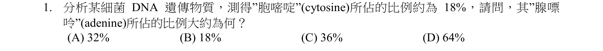
本地原卷PDF2 · 同年原答案PDF1（封存轉存本） · 已核對同年釋疑PDF7–10（未列本題）
官方採計／來源：A 原答案：A
未列已取得同年公告的10筆生物釋疑；依原表記錄，不宣稱沒有其他公告
主分類：Ch16 The Molecular Basis of Inheritance
16.1 / Building a Structural Model of DNA
目錄行1000；條目起始印刷頁317；實際目錄 PDF39
次分類：Ch05 The Structure and Function of Large Biological Molecules
5.5 / The Structures of DNA and RNA Molecules
目錄行284；條目起始印刷頁86；實際目錄 PDF36
主分類理由：16.1 / Building a Structural Model of DNA：用雙股DNA的鹼基互補關係計算組成比例，直接對應DNA結構模型與Chargaff關係。
次分類理由：5.5 / The Structures of DNA and RNA Molecules：5.5提供核酸結構與互補配對的分子基礎
科學說明：原表A。C=18%則G=18%，A與T合計64%，各32%。36%是G+C，64%是A+T，不能直接當作A；計算以細菌雙股DNA為前提。
來源涵蓋範圍：分類依本地Campbell 12e真實最小目錄及正文；官網舊PDF轉首頁，釋疑取同年鏡像並與官方URL索引文字交叉核對。課外來源實讀範圍及限制另列。
教材正文：印刷86／PDF135、印刷315／PDF364、印刷316／PDF365、印刷317／PDF366、印刷318／PDF367、印刷319／PDF368、印刷320／PDF369
補充來源：本題未另列課本外來源
另行比較：把18%、36%或64%誤作A的單一比例
重開完整裁圖核C=18%；独立算A=(100−2×18)/2=32%。主16.1與次5.5證據充分。
結論：證據確認，分類疑義已解決。完整覆核紀錄
Q02 · 11.2 / Intracellular Receptors 正式分類
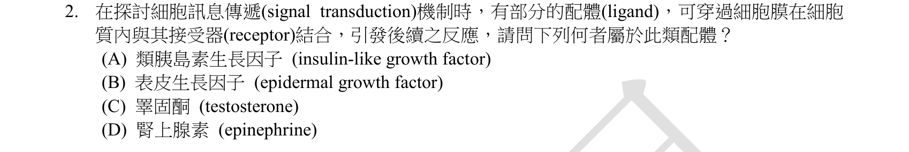
本地原卷PDF2 · 同年原答案PDF1（封存轉存本） · 已核對同年釋疑PDF7–10（未列本題）
官方採計／來源：C 原答案：C
未列已取得同年公告的10筆生物釋疑；依原表記錄，不宣稱沒有其他公告
主分類：Ch11 Cell Communication
11.2 / Intracellular Receptors
目錄行711；條目起始印刷頁220；實際目錄 PDF38
次分類：Ch45 Hormones and the Endocrine System
45.1 / Cellular Hormone Response Pathways
目錄行3004；條目起始印刷頁1002；實際目錄 PDF47
主分類理由：11.2 / Intracellular Receptors：鑑別可通過膜並結合胞內受器的配體，決策核心是胞內受器位置。
次分類理由：45.1 / Cellular Hormone Response Pathways：比較水溶性與脂溶性激素的受器及後續反應路徑
科學說明：原表C。睪固酮是脂溶性類固醇，可與胞內受器作用；IGF、EGF屬蛋白訊號，腎上腺素主要藉膜受器。並非任何激素都穿膜直接結合細胞質受器。
來源涵蓋範圍：分類依本地Campbell 12e真實最小目錄及正文；官網舊PDF轉首頁，釋疑取同年鏡像並與官方URL索引文字交叉核對。課外來源實讀範圍及限制另列。
教材正文：印刷220／PDF269、印刷1002／PDF1051、印刷1003／PDF1052
補充來源：本題未另列課本外來源
另行比較：IGF／EGF／epinephrine是否也屬題指的胞內配體
逐項核原圖中英名稱，C為testosterone；11.2以受器位置最直接，45.1補激素作用，未只依激素字詞歸類。
結論：證據確認，分類疑義已解決。完整覆核紀錄
Q03 · 9.4 / Chemiosmosis: The Energy-Coupling Mechanism 正式分類
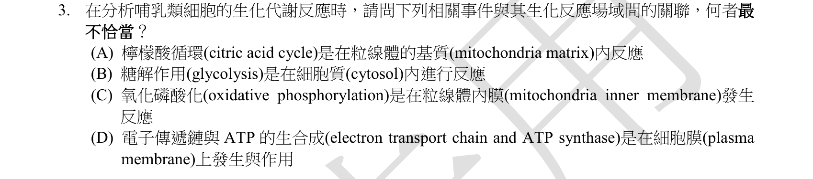
本地原卷PDF2 · 同年原答案PDF1（封存轉存本） · 已核對同年釋疑PDF7–10（未列本題）
官方採計／來源：D 原答案：D
未列已取得同年公告的10筆生物釋疑；依原表記錄，不宣稱沒有其他公告
主分類：Ch09 Cellular Respiration and Fermentation
9.4 / Chemiosmosis: The Energy-Coupling Mechanism
目錄行585；條目起始印刷頁175；實際目錄 PDF37
次分類：Ch09 Cellular Respiration and Fermentation
9.4 / The Pathway of Electron Transport
目錄行582；條目起始印刷頁174；實際目錄 PDF37
次分類：Ch06 A Tour of the Cell
6.5 / Mitochondria: Chemical Energy Conversion
目錄行365；條目起始印刷頁110；實際目錄 PDF36
主分類理由：9.4 / Chemiosmosis: The Energy-Coupling Mechanism：判斷氧化磷酸化產生ATP的正確膜位置，化學滲透偶聯是核心。
次分類理由：9.4 / The Pathway of Electron Transport：電子傳遞鏈位於粒線體內膜；6.5 / Mitochondria: Chemical Energy Conversion：粒線體分區對照基質與內外膜
科學說明：原表D。哺乳類電子傳遞鏈與ATP合成酶在粒線體內膜，不在細胞質膜。糖解位於細胞質、丙酮酸氧化及檸檬酸循環主要在基質。教材圖中的succinate dehydrogenase是內膜相關例外，因此「循環全數酵素都只在基質」須避免絕對化。
來源涵蓋範圍：分類依本地Campbell 12e真實最小目錄及正文；官網舊PDF轉首頁，釋疑取同年鏡像並與官方URL索引文字交叉核對。課外來源實讀範圍及限制另列。
教材正文：印刷110／PDF159、印刷168／PDF217、印刷169／PDF218、印刷170／PDF219、印刷171／PDF220、印刷172／PDF221、印刷173／PDF222、印刷174／PDF223、印刷175／PDF224、印刷176／PDF225、印刷177／PDF226
補充來源：本題未另列課本外來源
另行比較：用原核膜位置回答哺乳類，或將檸檬酸循環例外誇大成多解
原图限定哺乳類且A未說全部酵素；D細胞膜位置明顯錯。保留內膜succinate dehydrogenase例外但不捏造原題的絕對字眼。
結論：證據確認，分類疑義已解決。完整覆核紀錄
Q04 · 27.4 / Archaea 正式分類
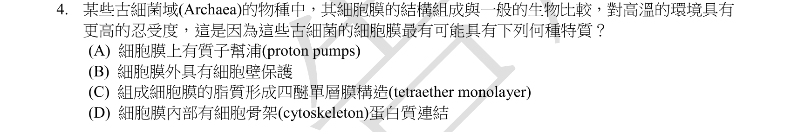
本地原卷PDF2 · 同年原答案PDF1（封存轉存本） · 已核對同年釋疑PDF7–10（未列本題）
官方採計／來源：C 原答案：C
未列已取得同年公告的10筆生物釋疑；依原表記錄，不宣稱沒有其他公告
主分類：Ch27 Bacteria and Archaea
27.4 / Archaea
目錄行1754；條目起始印刷頁585；實際目錄 PDF42
次分類：Ch07 Membrane Structure and Function
7.1 / Evolution of Differences in Membrane Lipid Composition
目錄行414；條目起始印刷頁129；實際目錄 PDF36
主分類理由：27.4 / Archaea：高溫古菌的膜特徵屬古菌的適應與分類特性。
次分類理由：7.1 / Evolution of Differences in Membrane Lipid Composition：膜脂組成隨環境演化的原理補足耐熱機制
科學說明：原表C。某些嗜熱古菌的雙極四醚脂質可跨膜形成單分子層，提升膜穩定性，對應題目tetraether／單層選項。Campbell只提供古菌膜及膜脂適應的一般框架，四醚的具體結構另查原始研究；不是所有古菌或所有高溫生存都必須採此結構。
來源涵蓋範圍：分類依本地Campbell 12e真實最小目錄及正文；官網舊PDF轉首頁，釋疑取同年鏡像並與官方URL索引文字交叉核對。課外來源實讀範圍及限制另列。
教材正文：印刷129／PDF178、印刷574／PDF623、印刷575／PDF624、印刷583／PDF632、印刷585／PDF634、印刷586／PDF635
補充來源：S01
另行比較：質子幫浦、細胞壁或骨架是否單獨說明高耐熱
原圖明寫「某些」古菌，C四醚單層與研究相合。首稿一般化限制保留，但不將它說成原題宣稱所有古菌。
結論：證據確認，分類疑義已解決。完整覆核紀錄
Q05 · 43.4 / Evolutionary Adaptations of Pathogens That Underlie Immune System Avoidance 正式分類
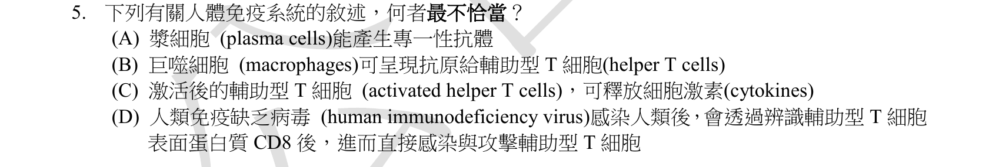
本地原卷PDF2 · 同年原答案PDF1（封存轉存本） · 同年釋疑轉存PDF7
官方採計／來源：D 原答案：D
維持原答案D
主分類：Ch43 The Immune System
43.4 / Evolutionary Adaptations of Pathogens That Underlie Immune System Avoidance
目錄行2927；條目起始印刷頁971；實際目錄 PDF47
次分類：Ch43 The Immune System
43.3 / Helper T Cells: Activating Adaptive Immunity
目錄行2896；條目起始印刷頁963；實際目錄 PDF47
次分類：Ch43 The Immune System
43.3 / B Cells and Antibodies: A Response to Extracellular Pathogens
目錄行2899；條目起始印刷頁964；實際目錄 PDF47
主分類理由：43.4 / Evolutionary Adaptations of Pathogens That Underlie Immune System Avoidance：錯誤選項落在HIV逃避免疫與受體的機制，對應病原體免疫逃避。
次分類理由：43.3 / Helper T Cells: Activating Adaptive Immunity：區分CD4輔助T細胞與CD8細胞毒性T細胞；43.3 / B Cells and Antibodies: A Response to Extracellular Pathogens：追溯B細胞分化成漿細胞及抗體作用
科學說明：原表及同年釋疑均D。HIV感染與輔助T細胞CD4相關，CD8不是本題所稱的HIV受體。輔助T細胞促進體液與細胞免疫，漿細胞分泌抗體；不可將CD4與CD8標誌混用。
來源涵蓋範圍：分類依本地Campbell 12e真實最小目錄及正文；官網舊PDF轉首頁，釋疑取同年鏡像並與官方URL索引文字交叉核對。課外來源實讀範圍及限制另列。
教材正文：印刷963／PDF1012、印刷964／PDF1013、印刷965／PDF1014、印刷971／PDF1020、印刷972／PDF1021、印刷973／PDF1022
補充來源：本題未另列課本外來源
另行比較：CD8與CD4或巨噬細胞呈抗原混淆
重看A–D，D確為CD8；同年釋疑維持D，正文963–973支持CD4與輔助T／B細胞分工。
結論：證據確認，分類疑義已解決。完整覆核紀錄
Q06 · 47.2 / Organogenesis 正式分類
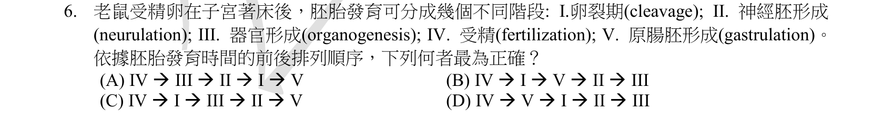
本地原卷PDF2 · 同年原答案PDF1（封存轉存本） · 已核對同年釋疑PDF7–10（未列本題）
官方採計／來源：B 原答案：B
未列已取得同年公告的10筆生物釋疑；依原表記錄，不宣稱沒有其他公告
主分類：Ch47 Animal Development
47.2 / Organogenesis
目錄行3150；條目起始印刷頁1054；實際目錄 PDF48
次分類：Ch47 Animal Development
47.1 / Cleavage
目錄行3137；條目起始印刷頁1046；實際目錄 PDF48
次分類：Ch47 Animal Development
47.2 / Gastrulation
目錄行3144；條目起始印刷頁1049；實際目錄 PDF48
次分類：Ch46 Animal Reproduction
46.5 / Conception, Embryonic Development, and Birth
目錄行3114；條目起始印刷頁1034；實際目錄 PDF48
主分類理由：47.2 / Organogenesis：事件排序最需要區分神經胚形成及器官發生的關係。
次分類理由：47.1 / Cleavage：卵裂建立早期胚胎；47.2 / Gastrulation：原腸化形成胚層；46.5 / Conception, Embryonic Development, and Birth：受精與著床的時間軸用來辨認題幹限制
科學說明：原表B，依事件起始順序為IV受精→I卵裂→V原腸化→II神經胚形成→III器官發生。原題說「受精卵著床於子宮後」卻把受精、卵裂列入，時間前提不精確；教材也把神經胚形成列為器官發生的一部分，兩者不應解讀成完全互斥的先後期。分類照存這兩項文字限制。
來源涵蓋範圍：分類依本地Campbell 12e真實最小目錄及正文；官網舊PDF轉首頁，釋疑取同年鏡像並與官方URL索引文字交叉核對。課外來源實讀範圍及限制另列。
教材正文：印刷1034／PDF1083、印刷1035／PDF1084、印刷1046／PDF1095、印刷1047／PDF1096、印刷1048／PDF1097、印刷1049／PDF1098、印刷1050／PDF1099、印刷1051／PDF1100、印刷1052／PDF1101、印刷1053／PDF1102、印刷1054／PDF1103、印刷1055／PDF1104
補充來源：本題未另列課本外來源
另行比較：著床後的起點能否包括受精；neurulation是否完全晚於／早於器官形成
原圖明寫著床後，B序列IV→I→V→II→III無誤。教材時間軸及organogenesis包含neurulation的層級限制分列，不改官方B。
結論：證據確認，分類疑義已解決。完整覆核紀錄
Q07 · 21.4 / Transposable Elements and Related Sequences 正式分類
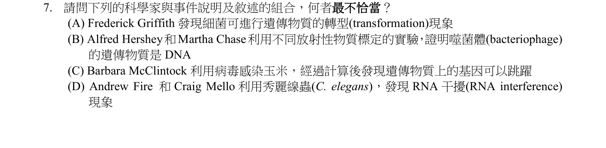
本地原卷PDF2 · 同年原答案PDF1（封存轉存本） · 已核對同年釋疑PDF7–10（未列本題）
官方採計／來源：C 原答案：C
未列已取得同年公告的10筆生物釋疑；依原表記錄，不宣稱沒有其他公告
主分類：Ch21 Genomes and Their Evolution
21.4 / Transposable Elements and Related Sequences
目錄行1327；條目起始印刷頁451；實際目錄 PDF40
次分類：Ch16 The Molecular Basis of Inheritance
16.1 / The Search for the Genetic Material: Scientific Inquiry
目錄行997；條目起始印刷頁315；實際目錄 PDF39
次分類：Ch18 Regulation of Gene Expression
18.3 / Effects on mRNAs by MicroRNAs and Small Interfering RNAs
目錄行1136；條目起始印刷頁379；實際目錄 PDF39
主分類理由：21.4 / Transposable Elements and Related Sequences：要辨認McClintock發現轉位子的實驗，核心落在可轉位元件。
次分類理由：16.1 / The Search for the Genetic Material: Scientific Inquiry：Griffith與Hershey–Chase支持遺傳物質的辨識；18.3 / Effects on mRNAs by MicroRNAs and Small Interfering RNAs：Fire及Mello對應雙股RNA引發的RNA干擾
科學說明：原表C。McClintock由玉米遺傳與色素斑駁追蹤可移動遺傳元件，不能改說以病毒感染玉米而發現轉位子。其餘選項涉及轉形、同位素追蹤DNA／蛋白質及RNAi，分列次目，不拿其他實驗替代其工作。
來源涵蓋範圍：分類依本地Campbell 12e真實最小目錄及正文；官網舊PDF轉首頁，釋疑取同年鏡像並與官方URL索引文字交叉核對。課外來源實讀範圍及限制另列。
教材正文：印刷315／PDF364、印刷316／PDF365、印刷317／PDF366、印刷379／PDF428、印刷380／PDF429、印刷451／PDF500、印刷452／PDF501
補充來源：S05
另行比較：把病毒壓力研究概括當作McClintock最初发现方法
原圖C確稱病毒感染玉米；教材轉位子及Nobel本人講稿的染色體破裂／玉米實驗支持排除C。其他三人的方法另存，不混校年來源。
結論：證據確認，分類疑義已解決。完整覆核紀錄
Q08 · 16.2 / DNA Replication: A Closer Look 正式分類
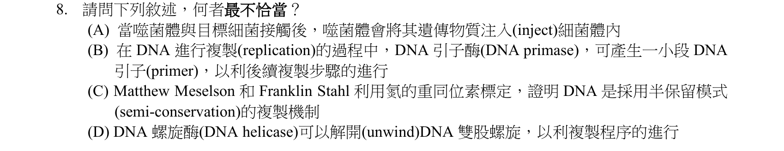
本地原卷PDF3 · 同年原答案PDF1（封存轉存本） · 已核對同年釋疑PDF7–10（未列本題）
官方採計／來源：B 原答案：B
未列已取得同年公告的10筆生物釋疑；依原表記錄，不宣稱沒有其他公告
主分類：Ch16 The Molecular Basis of Inheritance
16.2 / DNA Replication: A Closer Look
目錄行1010；條目起始印刷頁322；實際目錄 PDF39
次分類：Ch16 The Molecular Basis of Inheritance
16.2 / The Basic Principle: Base Pairing to a Template Strand
目錄行1007；條目起始印刷頁321；實際目錄 PDF39
主分類理由：16.2 / DNA Replication: A Closer Look：引子酵素、解旋酵素與DNA複製機制屬DNA複製細節。
次分類理由：16.2 / The Basic Principle: Base Pairing to a Template Strand：半保留模式與模板互補配對解釋Meselson–Stahl實驗結果
科學說明：原表B。Primase製造RNA引子，不是DNA引子；DNA聚合酶再延伸。解旋酵素打開雙股，複製遵循半保留；噬菌體DNA進入宿主也不等於其蛋白外殼一同進入。
來源涵蓋範圍：分類依本地Campbell 12e真實最小目錄及正文；官網舊PDF轉首頁，釋疑取同年鏡像並與官方URL索引文字交叉核對。課外來源實讀範圍及限制另列。
教材正文：印刷321／PDF370、印刷322／PDF371、印刷323／PDF372、印刷324／PDF373、印刷325／PDF374、印刷326／PDF375、印刷327／PDF376
補充來源：本題未另列課本外來源
另行比較：把primase名稱的DNA字樣當作產物DNA
重開完整裁圖，錯在B產物「DNA引子」，RNA引子與半保留、解旋功能皆可從16.2核實。
結論：證據確認，分類疑義已解決。完整覆核紀錄
Q09 · 18.3 / Effects on mRNAs by MicroRNAs and Small Interfering RNAs 正式分類
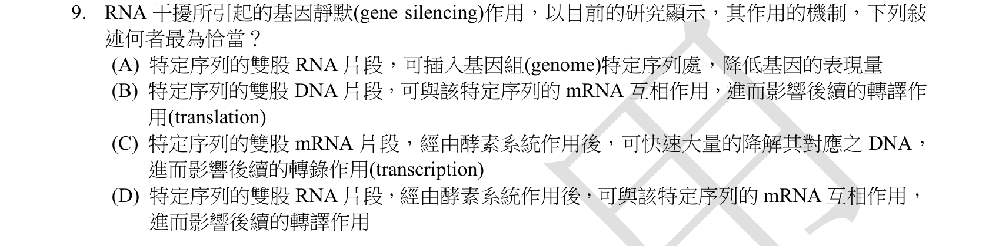
本地原卷PDF3 · 同年原答案PDF1（封存轉存本） · 已核對同年釋疑PDF7–10（未列本題）
官方採計／來源：D 原答案：D
未列已取得同年公告的10筆生物釋疑；依原表記錄，不宣稱沒有其他公告
主分類：Ch18 Regulation of Gene Expression
18.3 / Effects on mRNAs by MicroRNAs and Small Interfering RNAs
目錄行1136；條目起始印刷頁379；實際目錄 PDF39
主分類理由：18.3 / Effects on mRNAs by MicroRNAs and Small Interfering RNAs：雙股RNA使序列相符mRNA失去表現能力，直接對應miRNA／siRNA的作用。
次分類理由：無另列最小次目；本題考點已由主目錄條目完整涵蓋。
科學說明：原表D。RNAi依序列互補引導mRNA降解或抑制翻譯；A插入基因組、B把作用物換成雙股DNA、C降解對應DNA，都不是此題所述RNAi。RNA可先被加工，不能把完整雙股RNA理解為直接取代核糖體。
來源涵蓋範圍：分類依本地Campbell 12e真實最小目錄及正文；官網舊PDF轉首頁，釋疑取同年鏡像並與官方URL索引文字交叉核對。課外來源實讀範圍及限制另列。
教材正文：印刷379／PDF428、印刷380／PDF429
補充來源：S05
另行比較：雙股DNA、插入基因組或降解DNA是否為此RNAi機制
原圖D先經酵素系統再作用mRNA；修正首稿泛談為逐一排除A插入、B雙股DNA及C降解DNA，保持18.3最小目錄。
結論：證據確認，分類疑義已解決。完整覆核紀錄
Q10 · 44.2 / Forms of Nitrogenous Waste 正式分類
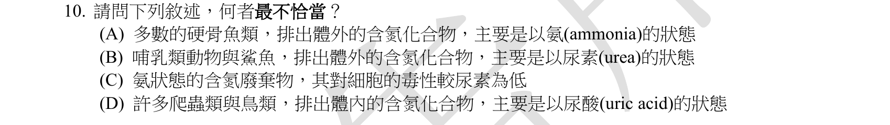
本地原卷PDF3 · 同年原答案PDF1（封存轉存本） · 已核對同年釋疑PDF7–10（未列本題）
官方採計／來源：C 原答案：C
未列已取得同年公告的10筆生物釋疑；依原表記錄，不宣稱沒有其他公告
主分類：Ch44 Osmoregulation and Excretion
44.2 / Forms of Nitrogenous Waste
目錄行2957；條目起始印刷頁982；實際目錄 PDF47
次分類：Ch44 Osmoregulation and Excretion
44.2 / The Influence of Evolution and Environment on Nitrogenous Wastes
目錄行2960；條目起始印刷頁983；實際目錄 PDF47
主分類理由：44.2 / Forms of Nitrogenous Waste：比較氨、尿素與尿酸的毒性、耗水量及代謝代價。
次分類理由：44.2 / The Influence of Evolution and Environment on Nitrogenous Wastes：不同動物排氮策略受演化史與棲地水分影響
科學說明：原表C。氨比尿素毒性高，需要大量水稀釋排出；尿素降低毒性但合成需能量，尿酸更省水而能量代價較高。排泄物種類不是只由棲地單一因素決定。
來源涵蓋範圍：分類依本地Campbell 12e真實最小目錄及正文；官網舊PDF轉首頁，釋疑取同年鏡像並與官方URL索引文字交叉核對。課外來源實讀範圍及限制另列。
教材正文：印刷982／PDF1031、印刷983／PDF1032
補充來源：本題未另列課本外來源
另行比較：氨與尿素毒性方向及鯊魚排尿素
完整A–D對照印刷982／983，C毒性方向顛倒；鯊魚及哺乳類尿素、硬骨魚氨、許多爬蟲鳥類尿酸皆按原限定詞保存。
結論：證據確認，分類疑義已解決。完整覆核紀錄
Q11 · 49.2 / Emotions 正式分類
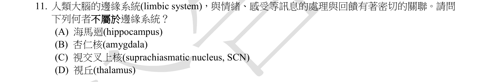
本地原卷PDF3 · 同年原答案PDF1（封存轉存本） · 已核對同年釋疑PDF7–10（未列本題）
官方採計／來源：C 原答案：C
未列已取得同年公告的10筆生物釋疑；依原表記錄，不宣稱沒有其他公告
主分類：Ch49 Nervous Systems
49.2 / Emotions
目錄行3261；條目起始印刷頁1095；實際目錄 PDF48
次分類：Ch49 Nervous Systems
49.2 / Biological Clock Regulation
目錄行3258；條目起始印刷頁1094；實際目錄 PDF48
主分類理由：49.2 / Emotions：辨識邊緣系統相關結構，教材以情緒功能整理此群構造。
次分類理由：49.2 / Biological Clock Regulation：視交叉上核屬生理時鐘調節，提供排除選項的直接對照
科學說明：原表C。杏仁核、海馬迴及部分丘腦屬教材的邊緣系統；視交叉上核SCN為晝夜節律中樞。不能把「部分丘腦」擴大成整個丘腦皆屬同一情緒迴路。
來源涵蓋範圍：分類依本地Campbell 12e真實最小目錄及正文；官網舊PDF轉首頁，釋疑取同年鏡像並與官方URL索引文字交叉核對。課外來源實讀範圍及限制另列。
教材正文：印刷1091／PDF1140、印刷1092／PDF1141、印刷1093／PDF1142、印刷1094／PDF1143、印刷1095／PDF1144
補充來源：本題未另列課本外來源
另行比較：把視丘全體與SCN混為邊緣系統
重開Q11，原圖D是視丘thalamus、C為SCN；教材限定部分丘腦參與邊緣系統，情緒與時鐘兩個同章最小條目照存。
結論：證據確認，分類疑義已解決。完整覆核紀錄
Q12 · 27.3 / Metabolic Cooperation 正式分類
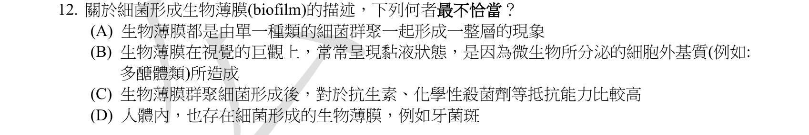
本地原卷PDF3 · 同年原答案PDF1（封存轉存本） · 同年釋疑轉存PDF8
官方採計／來源：A 原答案：A
維持原答案A
主分類：Ch27 Bacteria and Archaea
27.3 / Metabolic Cooperation
目錄行1741；條目起始印刷頁582；實際目錄 PDF42
主分類理由：27.3 / Metabolic Cooperation：生物膜是原核細胞代謝合作的實例，目錄未另設biofilm葉條目。
次分類理由：無另列最小次目；本題考點已由主目錄條目完整涵蓋。
科學說明：原表及釋疑A。題目說「皆由單一種」過度絕對；教材印刷582明寫生物膜可由一種或多種原核生物形成。釋疑把定義寫成多物種，也不代表單一物種不能形成生物膜。維持A並保留公告定義比教材狹窄的差異。
來源涵蓋範圍：分類依本地Campbell 12e真實最小目錄及正文；官網舊PDF轉首頁，釋疑取同年鏡像並與官方URL索引文字交叉核對。課外來源實讀範圍及限制另列。
教材正文：印刷582／PDF631、印刷583／PDF632、印刷587／PDF636、印刷588／PDF637、印刷589／PDF638
補充來源：本題未另列課本外來源
另行比較：生物膜一定單一物種或一定多物種
A有「都是」；印刷582實圖明寫one or more species。同年釋疑雖維持A，其多種細菌定義過窄，科學差異明列。
結論：證據確認，分類疑義已解決。完整覆核紀錄
Q13 · 6.4 / Lysosomes: Digestive Compartments 正式分類
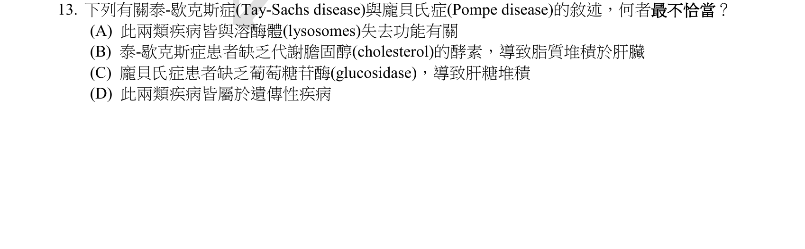
本地原卷PDF3 · 同年原答案PDF1（封存轉存本） · 已核對同年釋疑PDF7–10（未列本題）
官方採計／來源：B 原答案：B
未列已取得同年公告的10筆生物釋疑；依原表記錄，不宣稱沒有其他公告
主分類：Ch06 A Tour of the Cell
6.4 / Lysosomes: Digestive Compartments
目錄行349；條目起始印刷頁107；實際目錄 PDF36
次分類：Ch14 Mendel and the Gene Idea
14.4 / Recessively Inherited Disorders
目錄行911；條目起始印刷頁285；實際目錄 PDF38
主分類理由：6.4 / Lysosomes: Digestive Compartments：兩病共同考溶體酵素缺損與受質累積，溶體是主分類。
次分類理由：14.4 / Recessively Inherited Disorders：兩者可呈體染色體隱性遺傳，補足遺傳疾病背景
科學說明：原表B。Tay–Sachs是HEXA相關溶體酵素功能不足，使GM2 ganglioside尤其在神經細胞累積，非肝臟膽固醇堆積。Pompe為GAA／酸性α葡萄糖苷酶不足，溶體肝醣累積且肌肉常受累，不能縮成只影響肝臟。
來源涵蓋範圍：分類依本地Campbell 12e真實最小目錄及正文；官網舊PDF轉首頁，釋疑取同年鏡像並與官方URL索引文字交叉核對。課外來源實讀範圍及限制另列。
教材正文：印刷107／PDF156、印刷108／PDF157、印刷285／PDF334、印刷286／PDF335
補充來源：S02、S03
另行比較：肝臟膽固醇與溶體GM2，或Pompe只肝臟
原圖B明寫cholesterol及肝臟；C只說肝糖堆積，不限定肝臟。NIH兩疾病機制補足Campbell，保持溶體主、隱性遺傳次。
結論：證據確認，分類疑義已解決。完整覆核紀錄
Q14 · 9.4 / Chemiosmosis: The Energy-Coupling Mechanism 正式分類
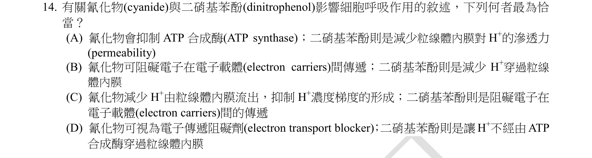
本地原卷PDF4 · 同年原答案PDF1（封存轉存本） · 已核對同年釋疑PDF7–10（未列本題）
官方採計／來源：D 原答案：D
未列已取得同年公告的10筆生物釋疑；依原表記錄，不宣稱沒有其他公告
主分類：Ch09 Cellular Respiration and Fermentation
9.4 / Chemiosmosis: The Energy-Coupling Mechanism
目錄行585；條目起始印刷頁175；實際目錄 PDF37
次分類：Ch09 Cellular Respiration and Fermentation
9.4 / The Pathway of Electron Transport
目錄行582；條目起始印刷頁174；實際目錄 PDF37
主分類理由：9.4 / Chemiosmosis: The Energy-Coupling Mechanism：比較電子流阻斷與質子梯度解偶聯，DNP影響化學滲透產ATP最直接。
次分類理由：9.4 / The Pathway of Electron Transport：氰化物抑制呼吸電子傳遞，與DNP作用點不同
科學說明：原表D。氰化物抑制末端電子傳遞；DNP使質子可繞過ATP合成酶回流而解偶聯，不能當成同一種電子傳遞抑制劑。兩者都能降低氧化磷酸化ATP產生，但對電子流的直接影響不同。
來源涵蓋範圍：分類依本地Campbell 12e真實最小目錄及正文；官網舊PDF轉首頁，釋疑取同年鏡像並與官方URL索引文字交叉核對。課外來源實讀範圍及限制另列。
教材正文：印刷174／PDF223、印刷175／PDF224、印刷176／PDF225、印刷177／PDF226、印刷178／PDF227、印刷186／PDF235
補充來源：S06
另行比較：DNP降低H+通透性或直接阻斷電子流
原圖D是H+不經ATP合成酶穿內膜；新讀教材186題14直接說DNP提高H+漏通。氰化物另用原始COX實驗核對，兩作用點分開。
結論：證據確認，分類疑義已解決。完整覆核紀錄
Q15 · 17.5 / Types of Small-Scale Mutations 正式分類
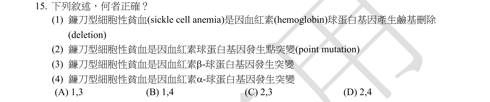
本地原卷PDF4 · 同年原答案PDF1（封存轉存本） · 已核對同年釋疑PDF7–10（未列本題）
官方採計／來源：C 原答案：C
未列已取得同年公告的10筆生物釋疑；依原表記錄，不宣稱沒有其他公告
主分類：Ch17 Gene Expression: From Gene to Protein
17.5 / Types of Small-Scale Mutations
目錄行1085；條目起始印刷頁357；實際目錄 PDF39
次分類：Ch14 Mendel and the Gene Idea
14.4 / Recessively Inherited Disorders
目錄行911；條目起始印刷頁285；實際目錄 PDF38
次分類：Ch05 The Structure and Function of Large Biological Molecules
5.4 / Protein Structure and Function
目錄行268；條目起始印刷頁78；實際目錄 PDF36
主分類理由：17.5 / Types of Small-Scale Mutations：判讀單一核苷酸替換引起錯義突變，主題是小尺度突變種類。
次分類理由：14.4 / Recessively Inherited Disorders：鐮刀型貧血提供隱性疾病例子；5.4 / Protein Structure and Function：單一胺基酸變動如何改變血紅素結構與功能
科學說明：原表C，對應2、3。典型鐮刀型變異是β-globin第六位Glu換成Val，由點突變造成，不是選項1的鹼基刪除，也不是選項4的α-globin突變。教材圖5.19直接顯示β鏈胺基酸替換及蛋白聚集，避免把基因／蛋白／細胞表型混作同一層級。
來源涵蓋範圍：分類依本地Campbell 12e真實最小目錄及正文；官網舊PDF轉首頁，釋疑取同年鏡像並與官方URL索引文字交叉核對。課外來源實讀範圍及限制另列。
教材正文：印刷80／PDF129、印刷81／PDF130、印刷82／PDF131、印刷286／PDF335、印刷357／PDF406、印刷358／PDF407、印刷359／PDF408
補充來源：本題未另列課本外來源
另行比較：刪除／點突變及α／β鏈兩軸混淆
原圖2與3對應C，圖5.19印刷82明示β第六位Glu→Val。把首稿「不是α鏈缺失」拆成兩個獨立錯誤敘述，避免合併選項1與4。
結論：證據確認，分類疑義已解決。完整覆核紀錄
Q16 · 14.4 / Pedigree Analysis 正式分類
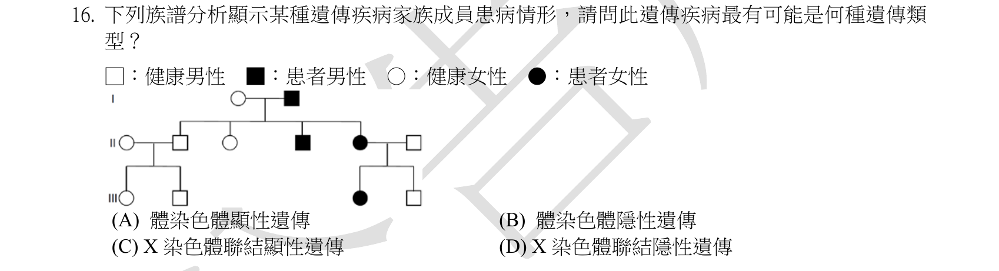
本地原卷PDF4 · 同年原答案PDF1（封存轉存本） · 同年釋疑轉存PDF8
官方採計／來源：A 原答案：A
維持原答案A
主分類：Ch14 Mendel and the Gene Idea
14.4 / Pedigree Analysis
目錄行908；條目起始印刷頁284；實際目錄 PDF38
次分類：Ch14 Mendel and the Gene Idea
14.4 / Dominantly Inherited Disorders
目錄行914；條目起始印刷頁287；實際目錄 PDF38
次分類：Ch14 Mendel and the Gene Idea
14.4 / Recessively Inherited Disorders
目錄行911；條目起始印刷頁285；實際目錄 PDF38
次分類：Ch15 The Chromosomal Basis of Inheritance
15.2 / Inheritance of X-Linked Genes
目錄行945；條目起始印刷頁299；實際目錄 PDF39
主分類理由：14.4 / Pedigree Analysis：必須依家系圖親子關係及性別逐一排除模式，主分類為家系分析。
次分類理由：14.4 / Dominantly Inherited Disorders：體染色體顯性模式為原答案；14.4 / Recessively Inherited Disorders：隱性帶因可構造符合圖的反例；15.2 / Inheritance of X-Linked Genes：X連鎖傳遞限制用來檢查兩個性聯選項
科學說明：原表及釋疑A（體染色體顯性）。依完全外顯、無新突變的簡單單基因模型，圖也可由體染色體隱性解釋：第一代健康母為Aa、患病父aa，患病女兒aa與健康帶因夫Aa可生患病女兒及健康兒子。原題未給外婚者非帶因或等位基因稀有等前提，公告「只有顯性吻合」不具唯一性。X顯性被患病父的健康女兒排除；X隱性被患病母與健康父的患病女兒及健康兒子排除。官方A與模型反例分開保存，不自訂新官方採計。
來源涵蓋範圍：分類依本地Campbell 12e真實最小目錄及正文；官網舊PDF轉首頁，釋疑取同年鏡像並與官方URL索引文字交叉核對。課外來源實讀範圍及限制另列。
教材正文：印刷284／PDF333、印刷285／PDF334、印刷286／PDF335、印刷287／PDF336、印刷299／PDF348、印刷300／PDF349
補充來源：本題未另列課本外來源
另行比較：公告稱僅AD吻合，AR及兩個X模式是否真的排除
完整家系圖含圖例及全部12人已重看，另以親子傳遞枚舉模型核對AD／AR均有合法配置、XD／XR不符。在官方A旁保存AR反例及假設，分類14.4確定。
結論：證據確認，分類疑義已解決。完整覆核紀錄
Q17 · 51.2 / Learning 正式分類
本地原卷PDF4 · 同年原答案PDF1（封存轉存本） · 已核對同年釋疑PDF7–10（未列本題）
官方採計／來源：D 原答案：D
未列已取得同年公告的10筆生物釋疑；依原表記錄，不宣稱沒有其他公告
主分類：Ch51 Animal Behavior
51.2 / Learning
目錄行3424；條目起始印刷頁1144；實際目錄 PDF49
主分類理由：51.2 / Learning：鮭魚記住出生水域訊號再回游屬印痕學習，實際最小目錄為Learning。
次分類理由：無另列最小次目；本題考點已由主目錄條目完整涵蓋。
科學說明：原表D。鮭魚在發育敏感期形成出生水域氣味的長期記憶，是imprinting例子；回游還涉及導航，但不以一般習慣化、操作制約替代敏感期的學習。Imprinting是正文小標，未偽造為目錄條目。
來源涵蓋範圍：分類依本地Campbell 12e真實最小目錄及正文；官網舊PDF轉首頁，釋疑取同年鏡像並與官方URL索引文字交叉核對。課外來源實讀範圍及限制另列。
教材正文：印刷1144／PDF1193、印刷1145／PDF1194、印刷1146／PDF1195、印刷1147／PDF1196
補充來源：本題未另列課本外來源
另行比較：回游與習慣、聯結或社會學習的關係
原圖D為銘印imprinting；教材Learning正文含鮭魚敏感期氣味記憶。此正文小標未冒充最小目錄，無需增加不必要次章。
結論：證據確認，分類疑義已解決。完整覆核紀錄
Q18 · 19.3 / Viral Diseases in Plants 正式分類
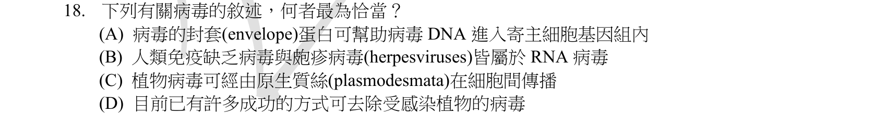
本地原卷PDF4 · 同年原答案PDF1（封存轉存本） · 同年釋疑轉存PDF8
官方採計／來源：C 原答案：C
維持原答案C
主分類：Ch19 Viruses
19.3 / Viral Diseases in Plants
目錄行1218；條目起始印刷頁412；實際目錄 PDF40
次分類：Ch19 Viruses
19.2 / Replicative Cycles of Animal Viruses
目錄行1202；條目起始印刷頁404；實際目錄 PDF40
主分類理由：19.3 / Viral Diseases in Plants：正確選項是植物病毒經胞間連絲細胞間傳播。
次分類理由：19.2 / Replicative Cycles of Animal Viruses：以動物病毒核酸、包膜及複製模式檢查其他選項
科學說明：原表及釋疑C。植物病毒可藉胞間連絲傳播，病毒移動蛋白可促進通行。HIV是RNA逆轉錄病毒，herpesvirus為DNA病毒；包膜融合與基因組整合不是同一事件。教材說多數植物病毒病尚無治癒方式，不擴大成所有植物病毒在任何技術下都絕無處理方式。
來源涵蓋範圍：分類依本地Campbell 12e真實最小目錄及正文；官網舊PDF轉首頁，釋疑取同年鏡像並與官方URL索引文字交叉核對。課外來源實讀範圍及限制另列。
教材正文：印刷404／PDF453、印刷405／PDF454、印刷406／PDF455、印刷412／PDF461、印刷413／PDF462
補充來源：本題未另列課本外來源
另行比較：包膜促進入胞是否等於病毒DNA整合宿主基因組
重讀A「基因組內」與C「原生質絲」及同年釋疑；胞間連絲傳播正確，動物病毒複製次目支持排B及A。
結論：證據確認，分類疑義已解決。完整覆核紀錄
Q19 · 26.4 / Genome Evolution 正式分類
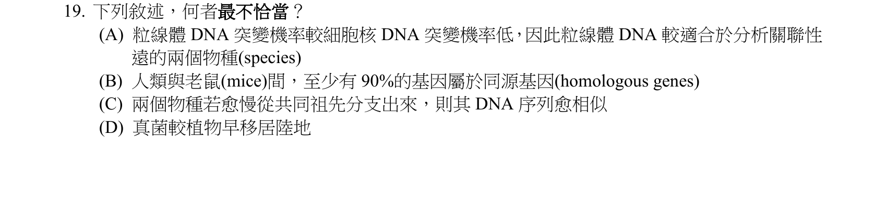
本地原卷PDF4 · 同年原答案PDF1（封存轉存本） · 已核對同年釋疑PDF7–10（未列本題）
官方採計／來源：A 原答案：A
未列已取得同年公告的10筆生物釋疑；依原表記錄，不宣稱沒有其他公告
主分類：Ch26 Phylogeny and the Tree of Life
26.4 / Genome Evolution
目錄行1678；條目起始印刷頁566；實際目錄 PDF42
次分類：Ch21 Genomes and Their Evolution
21.6 / Comparing Genomes
目錄行1359；條目起始印刷頁459；實際目錄 PDF40
次分類：Ch31 Fungi
31.3 / The Move to Land
目錄行1992；條目起始印刷頁660；實際目錄 PDF43
主分類理由：26.4 / Genome Evolution：以不同基因組演化速率決定親緣分析尺度，直接對應基因組演化。
次分類理由：21.6 / Comparing Genomes：比較人與鼠的基因組共同性；31.3 / The Move to Land：真菌登陸時序是另一選項的演化證據
科學說明：原表A。教材以相對快速演化的mtDNA研究較近期事件，與A的慢速／遠緣用途相反；不能推廣為所有生物的mtDNA一律快於核DNA。原圖B為人鼠「至少90% homologous genes」；教材的99% orthologous在此下限之內，但同源性及直系同源需分清，不把同源基因比例改寫成全基因組序列一致率。教材659–660說真菌可能早於植物登陸；題目D說得較確定，此證據強度差異另列。
來源涵蓋範圍：分類依本地Campbell 12e真實最小目錄及正文；官網舊PDF轉首頁，釋疑取同年鏡像並與官方URL索引文字交叉核對。課外來源實讀範圍及限制另列。
教材正文：印刷459／PDF508、印刷460／PDF509、印刷461／PDF510、印刷565／PDF614、印刷566／PDF615、印刷659／PDF708、印刷660／PDF709
補充來源：本題未另列課本外來源
另行比較：B是約90%還是至少90%；移居陸地時序有無確證
重看原圖B為「至少90% homologous genes」，不是首稿的「約90%基因相似」。修正文意，99% orthologous可涵蓋此下限。教材登陸說可能早於植物，保留D斷言比教材強的差異。
結論：證據確認，分類疑義已解決。完整覆核紀錄
Q20 · 31.3 / The Origin of Fungi 正式分類
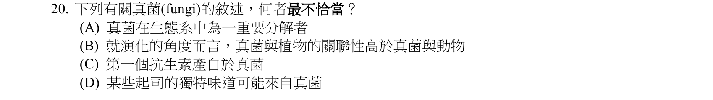
本地原卷PDF5 · 同年原答案PDF1（封存轉存本） · 已核對同年釋疑PDF7–10（未列本題）
官方採計／來源：B 原答案：B
未列已取得同年公告的10筆生物釋疑；依原表記錄，不宣稱沒有其他公告
主分類：Ch31 Fungi
31.3 / The Origin of Fungi
目錄行1989；條目起始印刷頁659；實際目錄 PDF43
次分類：Ch31 Fungi
31.5 / Fungi as Decomposers
目錄行2018；條目起始印刷頁667；實際目錄 PDF43
次分類：Ch31 Fungi
31.5 / Practical Uses of Fungi
目錄行2024；條目起始印刷頁670；實際目錄 PDF43
主分類理由：31.3 / The Origin of Fungi：真菌與動物的共同祖先較近，決策核心為真菌起源與親緣。
次分類理由：31.5 / Fungi as Decomposers：分解者生態作用；31.5 / Practical Uses of Fungi：青黴素、乳酪等實際利用
科學說明：原表B。真菌與動物親緣比與植物近；不是因不移動、具細胞壁就歸為植物近親。真菌的分解作用及食品、藥物利用均可成立。
來源涵蓋範圍：分類依本地Campbell 12e真實最小目錄及正文；官網舊PDF轉首頁，釋疑取同年鏡像並與官方URL索引文字交叉核對。課外來源實讀範圍及限制另列。
教材正文：印刷659／PDF708、印刷660／PDF709、印刷667／PDF716、印刷670／PDF719
補充來源：本題未另列課本外來源
另行比較：真菌動物親緣及第一個抗生素的語境
原圖B將真菌與植物較近，與31.3相反；C按教材青黴素為早期抗生素的脈絡理解，不換成廣義所有抗微生物療法的歷史。
結論：證據確認，分類疑義已解決。完整覆核紀錄
Q21 · 41.4 / Mutualistic Adaptations 正式分類
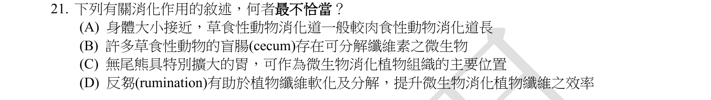
本地原卷PDF5 · 同年原答案PDF1（封存轉存本） · 已核對同年釋疑PDF7–10（未列本題）
官方採計／來源：C 原答案：C
未列已取得同年公告的10筆生物釋疑；依原表記錄，不宣稱沒有其他公告
主分類：Ch41 Animal Nutrition
41.4 / Mutualistic Adaptations
目錄行2733；條目起始印刷頁912；實際目錄 PDF46
次分類：Ch41 Animal Nutrition
41.4 / Stomach and Intestinal Adaptations
目錄行2730；條目起始印刷頁912；實際目錄 PDF46
主分類理由：41.4 / Mutualistic Adaptations：考拉以共生微生物處理纖維素，主分類是互利適應。
次分類理由：41.4 / Stomach and Intestinal Adaptations：比較草食動物胃與腸道及盲腸的構造差異
科學說明：原表C。考拉的共生微生物主要位於大的盲腸，屬後腸發酵，不能說以特別大的胃裝微生物消化纖維素。教材也畫出相對較長腸道；不把考拉套成反芻動物四室胃。
來源涵蓋範圍：分類依本地Campbell 12e真實最小目錄及正文；官網舊PDF轉首頁，釋疑取同年鏡像並與官方URL索引文字交叉核對。課外來源實讀範圍及限制另列。
教材正文：印刷912／PDF961、印刷913／PDF962、印刷914／PDF963
補充來源：本題未另列課本外來源
另行比較：無尾熊大胃與大盲腸、反芻動物混用
原圖C明確寫胃，教材914列koala大盲腸，B微生物與A消化道相對長、D反芻條件皆保留。主互利適應、次胃腸適應同章照存。
結論：證據確認，分類疑義已解決。完整覆核紀錄
Q22 · 27.1 / Cell-Surface Structures 正式分類
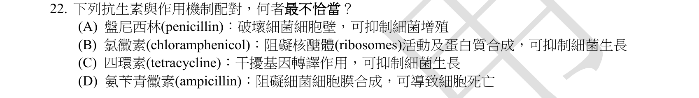
本地原卷PDF5 · 同年原答案PDF1（封存轉存本） · 已核對同年釋疑PDF7–10（未列本題）
官方採計／來源：D 原答案：D
未列已取得同年公告的10筆生物釋疑；依原表記錄，不宣稱沒有其他公告
主分類：Ch27 Bacteria and Archaea
27.1 / Cell-Surface Structures
目錄行1709；條目起始印刷頁574；實際目錄 PDF42
次分類：Ch17 Gene Expression: From Gene to Protein
17.4 / Molecular Components of Translation
目錄行1069；條目起始印刷頁348；實際目錄 PDF39
主分類理由：27.1 / Cell-Surface Structures：Ampicillin的作用點為細菌細胞壁，與題目錯寫的細胞膜區分。
次分類理由：17.4 / Molecular Components of Translation：其他選項抗生素透過細菌核糖體干擾轉譯
科學說明：原表D。Ampicillin抑制細胞壁肽聚醣合成，非細胞膜合成；原圖C寫「干擾基因轉譯作用」，屬核糖體蛋白合成機制，不能誤讀為轉錄後製造多解。Tetracycline與chloramphenicol須按原選項的轉譯層次解讀。
來源涵蓋範圍：分類依本地Campbell 12e真實最小目錄及正文；官網舊PDF轉首頁，釋疑取同年鏡像並與官方URL索引文字交叉核對。課外來源實讀範圍及限制另列。
教材正文：印刷349／PDF398、印刷350／PDF399、印刷351／PDF400、印刷352／PDF401、印刷353／PDF402、印刷354／PDF403、印刷355／PDF404、印刷574／PDF623、印刷575／PDF624、印刷588／PDF637、印刷589／PDF638
補充來源：S07
另行比較：轉譯或轉錄及抗生素名稱錯置
完整原圖B為chloramphenicol、C為tetracycline，沒有erythromycin。修正首稿藥名，C確寫轉譯；同題D细胞膜應為細胞壁，DailyMed機制補充與27.1相合。
結論：證據確認，分類疑義已解決。完整覆核紀錄
Q23 · 5.2 / Sugars 正式分類
本地原卷PDF5 · 同年原答案PDF1（封存轉存本） · 已核對同年釋疑PDF7–10（未列本題）
官方採計／來源：C 原答案：C
未列已取得同年公告的10筆生物釋疑；依原表記錄，不宣稱沒有其他公告
主分類：Ch05 The Structure and Function of Large Biological Molecules
5.2 / Sugars
目錄行239；條目起始印刷頁68；實際目錄 PDF36
次分類：Ch50 Sensory and Motor Mechanisms
50.4 / Taste in Mammals
目錄行3371；條目起始印刷頁1123；實際目錄 PDF49
主分類理由：5.2 / Sugars：辨認糖類中的蔗糖作為甜度比較物，主分類為Sugars。
次分類理由：50.4 / Taste in Mammals：感覺甜度量測屬哺乳類味覺背景
科學說明：原表C。蔗糖常作相對甜度的參照物；不因果糖較甜就把標準改成果糖。Campbell支持糖類結構與味覺機制，實驗量測採蔗糖參照的具體慣例另查研究方法；相對甜度仍隨濃度、溫度與測試設計而變。
來源涵蓋範圍：分類依本地Campbell 12e真實最小目錄及正文；官網舊PDF轉首頁，釋疑取同年鏡像並與官方URL索引文字交叉核對。課外來源實讀範圍及限制另列。
教材正文：印刷68／PDF117、印刷69／PDF118、印刷1123／PDF1172、印刷1124／PDF1173
補充來源：S04
另行比較：最常比較標準與實際甜度最高者混淆
重看題幹「量化」「最常」，不是問最甜。蔗糖參照的研究方法支持C；5.2主分類與50.4次分類不冒充ISO全文驗證。
結論：證據確認，分類疑義已解決。完整覆核紀錄
Q24 · 39.5 / Defenses Against Pathogens 正式分類
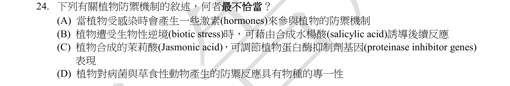
本地原卷PDF5 · 同年原答案PDF1（封存轉存本） · 同年釋疑轉存PDF8
官方採計／來源：D 原答案：D
維持原答案D
主分類：Ch39 Plant Responses to Internal and External Signals
39.5 / Defenses Against Pathogens
目錄行2596；條目起始印刷頁866；實際目錄 PDF45
次分類：Ch39 Plant Responses to Internal and External Signals
39.5 / Defenses Against Herbivores
目錄行2599；條目起始印刷頁867；實際目錄 PDF45
次分類：Ch39 Plant Responses to Internal and External Signals
39.2 / A Survey of Plant Hormones
目錄行2557；條目起始印刷頁847；實際目錄 PDF45
主分類理由：39.5 / Defenses Against Pathogens：植物對病原的防禦、SA與系統性獲得抗性是主要判讀內容。
次分類理由：39.5 / Defenses Against Herbivores：Jasmonate誘發抗草食性防禦及蛋白酶抑制劑；39.2 / A Survey of Plant Hormones：植物激素的整體訊息功能
科學說明：原表及釋疑D。公告以SAR可對多類病原提升防禦說明D「種的專一性」不恰當；但教材同時有PAMP與效應子辨識，不能推論植物完全沒有分子辨識專一性。SA與jasmonate涉及不同但交互作用的防禦路徑；本題保留其概括措辭與科學範圍。
來源涵蓋範圍：分類依本地Campbell 12e真實最小目錄及正文；官網舊PDF轉首頁，釋疑取同年鏡像並與官方URL索引文字交叉核對。課外來源實讀範圍及限制另列。
教材正文：印刷847／PDF896、印刷848／PDF897、印刷849／PDF898、印刷853／PDF902、印刷854／PDF903、印刷866／PDF915、印刷867／PDF916、印刷868／PDF917
補充來源：本題未另列課本外來源
另行比較：物種專一性與分子受器專一性是否等義
原圖D泛指對病菌及草食動物的物種專一性；公告SAR與教材辨識機制須分清。主病原防禦、次抗草食及激素皆為實際最小目錄。
結論：證據確認，分類疑義已解決。完整覆核紀錄
Q25 · 10.4 / The Calvin cycle uses the chemical energy of ATP and NADPH to reduce CO2 to sugar 正式分類
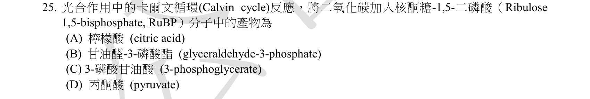
本地原卷PDF5 · 同年原答案PDF1（封存轉存本） · 同年釋疑轉存PDF9
官方採計／來源：C 原答案：C
維持原答案C
主分類：Ch10 Photosynthesis
10.4 / The Calvin cycle uses the chemical energy of ATP and NADPH to reduce CO2 to sugar
目錄行665；條目起始印刷頁201；實際目錄 PDF37
主分類理由：10.4 / The Calvin cycle uses the chemical energy of ATP and NADPH to reduce CO2 to sugar：Rubisco固定CO2後產生3-PGA，完整概念10.4在目錄下無更細葉條目。
次分類理由：無另列最小次目；本題考點已由主目錄條目完整涵蓋。
科學說明：原表及釋疑C。RuBP的5個碳加CO2的1個碳，先成短命6碳中間物，立即裂成兩個3-PGA；原題只問產物，未寫「第一個穩定」；選項中的直接穩定產物是3-PGA，不是後續還原出的G3P。碳數獨立核算5+1=2×3。
來源涵蓋範圍：分類依本地Campbell 12e真實最小目錄及正文；官網舊PDF轉首頁，釋疑取同年鏡像並與官方URL索引文字交叉核對。課外來源實讀範圍及限制另列。
教材正文：印刷201／PDF250、印刷202／PDF251、印刷203／PDF252
補充來源：本題未另列課本外來源
另行比較：題目是否明寫第一個穩定產物
原圖只問CO2加入RuBP後「產物」，未出現「第一個穩定」。說明補上短命6碳物與立即裂成兩個3-PGA的差異，原答案C及公告不變。
結論：證據確認，分類疑義已解決。完整覆核紀錄
Q26 · 49.4 / Memory and Learning 正式分類
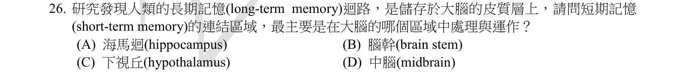
本地原卷PDF5 · 同年原答案PDF1（封存轉存本） · 已核對同年釋疑PDF7–10（未列本題）
官方採計／來源：A 原答案：A
未列已取得同年公告的10筆生物釋疑；依原表記錄，不宣稱沒有其他公告
主分類：Ch49 Nervous Systems
49.4 / Memory and Learning
目錄行3293；條目起始印刷頁1100；實際目錄 PDF48
次分類：Ch49 Nervous Systems
49.4 / Neuronal Plasticity
目錄行3290；條目起始印刷頁1100；實際目錄 PDF48
主分類理由：49.4 / Memory and Learning：海馬迴參與記憶形成與由短期轉長期的過程。
次分類理由：49.4 / Neuronal Plasticity：突觸可塑性提供學習記憶的細胞機制
科學說明：原表A。相較其他列出的部位，海馬迴最直接對應教材短期記憶及建立長期記憶的脈絡；長期記憶內容分布於大腦皮質。不能概括所有工作記憶或所有記憶型態都只在海馬迴。
來源涵蓋範圍：分類依本地Campbell 12e真實最小目錄及正文；官網舊PDF轉首頁，釋疑取同年鏡像並與官方URL索引文字交叉核對。課外來源實讀範圍及限制另列。
教材正文：印刷1099／PDF1148、印刷1100／PDF1149、印刷1101／PDF1150
補充來源：本題未另列課本外來源
另行比較：短期連結處理與長期皮質儲存混淆
完整題幹先提長期皮質、再問短期連結；海馬迴A與49.4吻合，次目神經可塑性補機制，未概括所有工作記憶。
結論：證據確認，分類疑義已解決。完整覆核紀錄
Q27 · 42.4 / Blood Composition and Function 正式分類
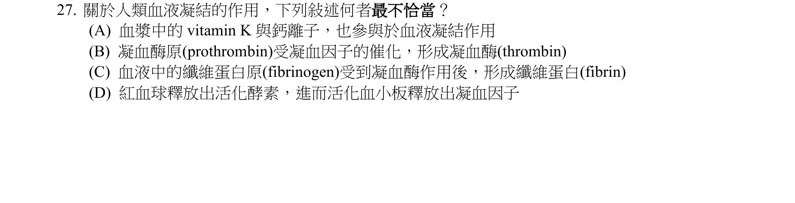
本地原卷PDF5 · 同年原答案PDF1（封存轉存本） · 已核對同年釋疑PDF7–10（未列本題）
官方採計／來源：D 原答案：D
未列已取得同年公告的10筆生物釋疑；依原表記錄，不宣稱沒有其他公告
主分類：Ch42 Circulation and Gas Exchange
42.4 / Blood Composition and Function
目錄行2802；條目起始印刷頁934；實際目錄 PDF46
次分類：Ch41 Animal Nutrition
41.1 / Essential Nutrients
目錄行2685；條目起始印刷頁899；實際目錄 PDF46
主分類理由：42.4 / Blood Composition and Function：凝血需要血小板、血漿蛋白及受損血管訊號，屬血液組成與功能。
次分類理由：41.1 / Essential Nutrients：維生素K與正常凝血所需營養相關
科學說明：原表D。受傷血管暴露的蛋白吸引血小板並啟動凝血級聯；紅血球不是選項所述的主要啟動細胞。Prothrombin轉成thrombin，再使fibrinogen形成fibrin；維生素K參與正常凝血因子的生成，不能把它寫成每一步凝血反應的直接催化劑。
來源涵蓋範圍：分類依本地Campbell 12e真實最小目錄及正文；官網舊PDF轉首頁，釋疑取同年鏡像並與官方URL索引文字交叉核對。課外來源實讀範圍及限制另列。
教材正文：印刷900／PDF949、印刷934／PDF983、印刷935／PDF984、印刷936／PDF985、印刷937／PDF986
補充來源：本題未另列課本外來源
另行比較：紅血球是否是凝血級聯的典型起點
重核原圖D的細胞名稱及B/C酵素順序，印刷936圖文支持血管損傷／血小板。A的維生素K是較間接生成角色，照存措辭限制。
結論：證據確認，分類疑義已解決。完整覆核紀錄
Q28 · 50.5 / Vertebrate Skeletal Muscle 正式分類
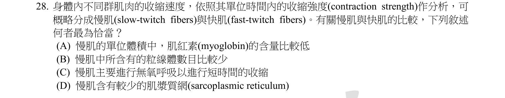
本地原卷PDF6 · 同年原答案PDF1（封存轉存本） · 已核對同年釋疑PDF7–10（未列本題）
官方採計／來源：D 原答案：D
未列已取得同年公告的10筆生物釋疑；依原表記錄，不宣稱沒有其他公告
主分類：Ch50 Sensory and Motor Mechanisms
50.5 / Vertebrate Skeletal Muscle
目錄行3381；條目起始印刷頁1126；實際目錄 PDF49
主分類理由：50.5 / Vertebrate Skeletal Muscle：比較骨骼肌纖維型態、代謝、收縮速度與SR。
次分類理由：無另列最小次目；本題考點已由主目錄條目完整涵蓋。
科學說明：原表D。教材印刷1131直接說slow fiber的肌漿網較少、回收Ca2+較慢。慢肌通常有較多粒線體及肌紅蛋白；快肌可分氧化型與糖解型，收縮速度和供能方式不是完全一對一。
來源涵蓋範圍：分類依本地Campbell 12e真實最小目錄及正文；官網舊PDF轉首頁，釋疑取同年鏡像並與官方URL索引文字交叉核對。課外來源實讀範圍及限制另列。
教材正文：印刷1126／PDF1175、印刷1127／PDF1176、印刷1128／PDF1177、印刷1129／PDF1178、印刷1130／PDF1179、印刷1131／PDF1180
補充來源：本題未另列課本外來源
另行比較：把快慢肌當成供能方式完全二分
D明寫較少SR，教材1131直接支持；表50.1有快氧化與快糖解兩型。保留此限制，主50.5無更細目錄條目。
結論：證據確認，分類疑義已解決。完整覆核紀錄
Q29 · 50.2 / Hearing and Equilibrium in Mammals 正式分類
本地原卷PDF6 · 同年原答案PDF1（封存轉存本） · 已核對同年釋疑PDF7–10（未列本題）
官方採計／來源：A 原答案：A
未列已取得同年公告的10筆生物釋疑；依原表記錄，不宣稱沒有其他公告
主分類：Ch50 Sensory and Motor Mechanisms
50.2 / Hearing and Equilibrium in Mammals
目錄行3351；條目起始印刷頁1112；實際目錄 PDF49
主分類理由：50.2 / Hearing and Equilibrium in Mammals：基底膜傳遞聽覺，前庭與半規管維持平衡，均屬哺乳類聽覺和平衡。
次分類理由：無另列最小次目；本題考點已由主目錄條目完整涵蓋。
科學說明：原表A。Basilar membrane位於耳蝸並參與頻率辨識，非平衡器官；橢圓囊、半規管及其中毛細胞與平衡有關。不能因耳蝸及前庭都在內耳，就混用兩者功能。
來源涵蓋範圍：分類依本地Campbell 12e真實最小目錄及正文；官網舊PDF轉首頁，釋疑取同年鏡像並與官方URL索引文字交叉核對。課外來源實讀範圍及限制另列。
教材正文：印刷1112／PDF1161、印刷1113／PDF1162、印刷1114／PDF1163、印刷1115／PDF1164、印刷1116／PDF1165
補充來源：本題未另列課本外來源
另行比較：D毛細胞也在耳蝸，是否因此不屬平衡
毛細胞同時分布前庭，A基底膜才最無關平衡；同一50.2目錄覆蓋全部選項，无需重複次分類。
結論：證據確認，分類疑義已解決。完整覆核紀錄
Q30 · 50.6 / Types of Skeletal Systems 正式分類
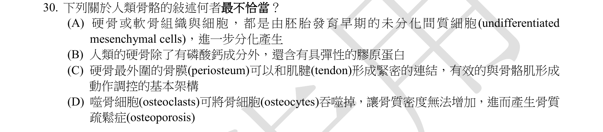
本地原卷PDF6 · 同年原答案PDF1（封存轉存本） · 已核對同年釋疑PDF7–10（未列本題）
官方採計／來源：D 原答案：D
未列已取得同年公告的10筆生物釋疑；依原表記錄，不宣稱沒有其他公告
主分類：Ch50 Sensory and Motor Mechanisms
50.6 / Types of Skeletal Systems
目錄行3391；條目起始印刷頁1132；實際目錄 PDF49
次分類：Ch40 Basic Principles of Animal Form and Function
40.1 / Hierarchical Organization of Body Plans
目錄行2623；條目起始印刷頁876；實際目錄 PDF46
主分類理由：50.6 / Types of Skeletal Systems：骨骼的重塑與破骨／造骨細胞功能位於骨骼系統類型的正文。
次分類理由：40.1 / Hierarchical Organization of Body Plans：結締組織的細胞及細胞外基質補足骨組織層次
科學說明：原表D。Osteoclast吸收骨基質與礦物成分，與osteoblast造骨相對；不能定義為吞食骨細胞。骨質疏鬆涉及骨吸收與形成失衡。A若把「都是間質細胞分化」套到全部骨組織細胞，亦不精確：造骨細胞／軟骨細胞為間質系，但破骨細胞源自造血單核球系；C骨膜可供肌腱韌帶附著。原答案D仍照存，不掩蓋A的概括範圍。
來源涵蓋範圍：分類依本地Campbell 12e真實最小目錄及正文；官網舊PDF轉首頁，釋疑取同年鏡像並與官方URL索引文字交叉核對。課外來源實讀範圍及限制另列。
教材正文：印刷877／PDF926、印刷878／PDF927、印刷1132／PDF1181、印刷1133／PDF1182、印刷1134／PDF1183、印刷1135／PDF1184
補充來源：S09
另行比較：骨細胞與骨基質吸收混淆；A全部骨細胞間質起源是否過度概括
完整原圖D明寫吞噬osteocytes；1134及骨組織補充指出重塑是基質吸收。A的mesenchymal是細胞類型，不等於只限中胚層；但全部骨細胞皆間質起源仍過廣，S09明列破骨細胞為造血單核球系，而造骨及軟骨細胞為間質系。原表D照存，A的來源例外另記，分類以骨骼支持及骨重塑為主。
結論：證據確認，分類疑義已解決。完整覆核紀錄
Q31 · 48.3 / Generation of Action Potentials: A Closer Look 正式分類
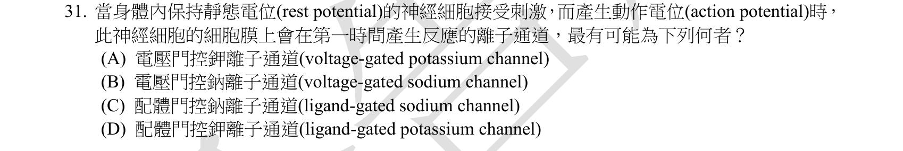
本地原卷PDF6 · 同年原答案PDF1（封存轉存本） · 已核對同年釋疑PDF7–10（未列本題）
官方採計／來源：B 原答案：B
未列已取得同年公告的10筆生物釋疑；依原表記錄，不宣稱沒有其他公告
主分類：Ch48 Neurons, Synapses, and Signaling
48.3 / Generation of Action Potentials: A Closer Look
目錄行3209；條目起始印刷頁1073；實際目錄 PDF48
次分類：Ch48 Neurons, Synapses, and Signaling
48.3 / Graded Potentials and Action Potentials
目錄行3206；條目起始印刷頁1073；實際目錄 PDF48
主分類理由：48.3 / Generation of Action Potentials: A Closer Look：閾值後電壓閘控Na+通道引起動作電位上升相。
次分類理由：48.3 / Graded Potentials and Action Potentials：區別起始刺激引起的漸變電位與全或無動作電位
科學說明：原表B。動作電位的再生性去極化由電壓閘控Na+通道開啟；K+通道開啟較晚使再極化。原題「受刺激首先」以啟動動作電位為範圍；若指化學突觸的最早反應，配體閘控受器可先產生漸變電位，不混為同一時間點。
來源涵蓋範圍：分類依本地Campbell 12e真實最小目錄及正文；官網舊PDF轉首頁，釋疑取同年鏡像並與官方URL索引文字交叉核對。課外來源實讀範圍及限制另列。
教材正文：印刷1072／PDF1121、印刷1073／PDF1122、印刷1074／PDF1123、印刷1075／PDF1124
補充來源：本題未另列課本外來源
另行比較：配體門控先產生漸變電位是否優於動作電位Na+通道
完整题幹限定產生動作電位，B為電壓門控Na+。保留初始刺激與動作電位起始的範圍，不把C的配體門控改成電壓門控。
結論：證據確認，分類疑義已解決。完整覆核紀錄
Q32 · 48.4 / Neurotransmitters 正式分類
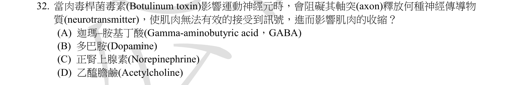
本地原卷PDF6 · 同年原答案PDF1（封存轉存本） · 已核對同年釋疑PDF7–10（未列本題）
官方採計／來源：D 原答案：D
未列已取得同年公告的10筆生物釋疑；依原表記錄，不宣稱沒有其他公告
主分類：Ch48 Neurons, Synapses, and Signaling
48.4 / Neurotransmitters
目錄行3231；條目起始印刷頁1080；實際目錄 PDF48
次分類：Ch50 Sensory and Motor Mechanisms
50.5 / Vertebrate Skeletal Muscle
目錄行3381；條目起始印刷頁1126；實際目錄 PDF49
主分類理由：48.4 / Neurotransmitters：肉毒桿菌毒素抑制突觸前ACh釋放，屬神經傳遞物作用。
次分類理由：50.5 / Vertebrate Skeletal Muscle：運動神經釋放ACh引發骨骼肌收縮，連接到肌肉無力表型
科學說明：原表D。Botulinum toxin阻止突觸前乙醯膽鹼釋放，肌肉收不到正常收縮訊號；此神經肌肉接點使用ACh，非A的GABA、B的dopamine或C的norepinephrine。教材印刷1081明列此機制。
來源涵蓋範圍：分類依本地Campbell 12e真實最小目錄及正文；官網舊PDF轉首頁，釋疑取同年鏡像並與官方URL索引文字交叉核對。課外來源實讀範圍及限制另列。
教材正文：印刷1077／PDF1126、印刷1078／PDF1127、印刷1080／PDF1129、印刷1081／PDF1130、印刷1128／PDF1177、印刷1129／PDF1178
補充來源：本題未另列課本外來源
另行比較：把傳遞物選項誤當成毒素機制選項
原題問GABA／dopamine／norepinephrine／ACh，D為ACh；修正首稿冗餘比較，1081具名毒素與1128神經肌肉接點提供雙重依據。
結論：證據確認，分類疑義已解決。完整覆核紀錄
Q33 · 41.1 / Essential Nutrients 正式分類
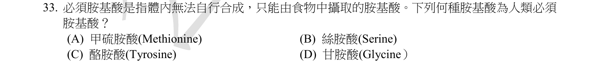
本地原卷PDF6 · 同年原答案PDF1（封存轉存本） · 已核對同年釋疑PDF7–10（未列本題）
官方採計／來源：A 原答案：A
未列已取得同年公告的10筆生物釋疑；依原表記錄，不宣稱沒有其他公告
主分類：Ch41 Animal Nutrition
41.1 / Essential Nutrients
目錄行2685；條目起始印刷頁899；實際目錄 PDF46
次分類：Ch05 The Structure and Function of Large Biological Molecules
5.4 / Amino Acids (Monomers)
目錄行262；條目起始印刷頁75；實際目錄 PDF36
主分類理由：41.1 / Essential Nutrients：由飲食取得、人體不能充分自行合成的胺基酸屬必需營養素。
次分類理由：5.4 / Amino Acids (Monomers)：四個選項的胺基酸化學身份
科學說明：原表A。Methionine為必需胺基酸；serine、glycine通常可自行合成，tyrosine通常可由phenylalanine生成而有條件性限制。僅判斷此四個選項，未把教材較舊的成人必需胺基酸總數敘述當作本題推論。
來源涵蓋範圍：分類依本地Campbell 12e真實最小目錄及正文；官網舊PDF轉首頁，釋疑取同年鏡像並與官方URL索引文字交叉核對。課外來源實讀範圍及限制另列。
教材正文：印刷75／PDF124、印刷76／PDF125、印刷77／PDF126、印刷899／PDF948、印刷900／PDF949
補充來源：本題未另列課本外來源
另行比較：Methionine與Tyrosine之必需性
原圖四個名稱、A甲硫胺酸皆核對；營養素需求是核心而非單靠胺基酸結構。次目保留化學身份，未延伸本題沒問的總數判斷。
結論：證據確認，分類疑義已解決。完整覆核紀錄
Q34 · 42.7 / Respiratory Pigments 正式分類
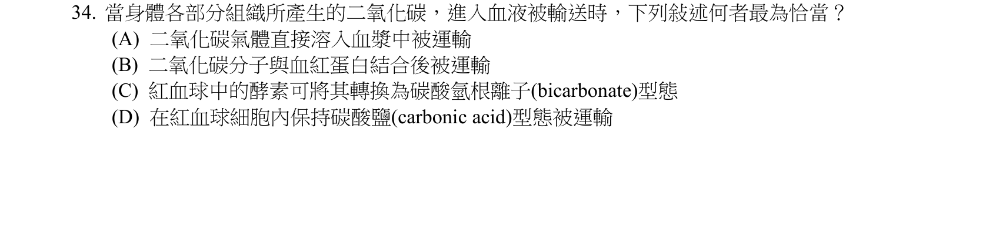
本地原卷PDF6 · 同年原答案PDF1（封存轉存本） · 已核對同年釋疑PDF7–10（未列本題）
官方採計／來源：C 原答案：C
未列已取得同年公告的10筆生物釋疑；依原表記錄，不宣稱沒有其他公告
主分類：Ch42 Circulation and Gas Exchange
42.7 / Respiratory Pigments
目錄行2853；條目起始印刷頁947；實際目錄 PDF46
主分類理由：42.7 / Respiratory Pigments：血液CO2運輸在呼吸色素條目正文中說明。
次分類理由：無另列最小次目；本題考點已由主目錄條目完整涵蓋。
科學說明：原表C。多數CO2在紅血球經carbonic anhydrase促進水合後轉為HCO3−，主要以碳酸氫根形式運輸。直接溶於血漿與結合血紅素也是少數運輸方式，因此「最恰當」指主要機制，不能說A、B過程全不存在；碳酸只是快速平衡的中間形式；D原圖中文「碳酸鹽」與英文carbonic acid（碳酸）亦不同。
來源涵蓋範圍：分類依本地Campbell 12e真實最小目錄及正文；官網舊PDF轉首頁，釋疑取同年鏡像並與官方URL索引文字交叉核對。課外來源實讀範圍及限制另列。
教材正文：印刷947／PDF996、印刷948／PDF997、印刷949／PDF998
補充來源：本題未另列課本外來源
另行比較：直接溶解與結合血紅素是否被错误宣稱不存在
原圖A/B均為真實少數運輸路徑，C是主要轉換；原圖D中文碳酸鹽與英文carbonic acid也不一致，補記語詞差異而保留官方C。
結論：證據確認，分類疑義已解決。完整覆核紀錄
Q35 · 26.6 / The Important Role of Horizontal Gene Transfer 正式分類
本地原卷PDF7 · 同年原答案PDF1（封存轉存本） · 同年釋疑轉存PDF9
官方採計／來源：C 原答案：C
維持原答案C
主分類：Ch26 Phylogeny and the Tree of Life
26.6 / The Important Role of Horizontal Gene Transfer
目錄行1698；條目起始印刷頁568；實際目錄 PDF42
主分類理由：26.6 / The Important Role of Horizontal Gene Transfer：蚜蟲自真菌取得類胡蘿蔔素合成基因，屬跨物種水平基因轉移。
次分類理由：無另列最小次目；本題考點已由主目錄條目完整涵蓋。
科學說明：原表及釋疑C。教材印刷570的蚜蟲序列比較實例對應真菌來源，題列基因倍增、分歧或調控改變本身不能充分解釋外源合成基因的取得。水平基因轉移也可發生於真核生物之間。
來源涵蓋範圍：分類依本地Campbell 12e真實最小目錄及正文；官網舊PDF轉首頁，釋疑取同年鏡像並與官方URL索引文字交叉核對。課外來源實讀範圍及限制另列。
教材正文：印刷568／PDF617、印刷569／PDF618、印刷570／PDF619
補充來源：本題未另列課本外來源
另行比較：基因倍增／分歧／調控是否足以解釋蚜蟲外源基因
原圖四選項為duplication／divergence／HGT／regulation；印刷570有蚜蟲真菌序列資料。修正首稿以其他未列選項作排除的寫法，主26.6確定。
結論：證據確認，分類疑義已解決。完整覆核紀錄
Q36 · 5.2 / Sugars 正式分類
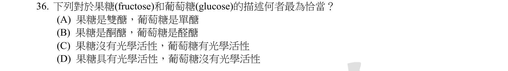
本地原卷PDF7 · 同年原答案PDF1（封存轉存本） · 已核對同年釋疑PDF7–10（未列本題）
官方採計／來源：B 原答案：B
未列已取得同年公告的10筆生物釋疑；依原表記錄，不宣稱沒有其他公告
主分類：Ch05 The Structure and Function of Large Biological Molecules
5.2 / Sugars
目錄行239；條目起始印刷頁68；實際目錄 PDF36
次分類：Ch04 Carbon and the Molecular Diversity of Life
4.2 / Molecular Diversity Arising from Variation in Carbon Skeletons
目錄行204；條目起始印刷頁60；實際目錄 PDF35
次分類：Ch04 Carbon and the Molecular Diversity of Life
4.3 / The Chemical Groups Most Important in the Processes of Life
目錄行211；條目起始印刷頁62；實際目錄 PDF35
主分類理由：5.2 / Sugars：葡萄糖為醛糖、果糖為酮糖，核心是單醣結構。
次分類理由：4.2 / Molecular Diversity Arising from Variation in Carbon Skeletons：碳骨架異構與手性解釋結構差異；4.3 / The Chemical Groups Most Important in the Processes of Life：羰基在端點或內部區分醛與酮
科學說明：原表B。葡萄糖及果糖都為單醣且可具旋光性，線形葡萄糖含醛基而果糖含酮基。生理溶液常為環狀，不等於失去按開鏈形式定義的醛糖／酮糖分類。D/L也不能直接當作正負旋光符號。
來源涵蓋範圍：分類依本地Campbell 12e真實最小目錄及正文；官網舊PDF轉首頁，釋疑取同年鏡像並與官方URL索引文字交叉核對。課外來源實讀範圍及限制另列。
教材正文：印刷60／PDF109、印刷61／PDF110、印刷62／PDF111、印刷63／PDF112、印刷68／PDF117、印刷69／PDF118
補充來源：本題未另列課本外來源
另行比較：果糖是否雙醣或無旋光性
原圖B酮糖／醛糖無誤，68圖的羰基位置與63官能基、60–62異構資料相合。兩個同章4最小次目皆保留，章級只算一次。
結論：證據確認，分類疑義已解決。完整覆核紀錄
Q37 · 11.5 / Apoptosis in the Soil Worm *Caenorhabditis elegans* 正式分類
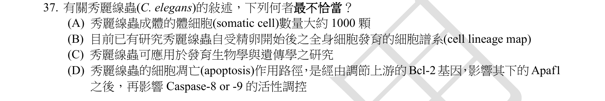
本地原卷PDF7 · 同年原答案PDF1（封存轉存本） · 已核對同年釋疑PDF7–10（未列本題）
官方採計／來源：D 原答案：D
未列已取得同年公告的10筆生物釋疑；依原表記錄，不宣稱沒有其他公告
主分類：Ch11 Cell Communication
11.5 / Apoptosis in the Soil Worm *Caenorhabditis elegans*
目錄行741；條目起始印刷頁230；實際目錄 PDF38
次分類：Ch11 Cell Communication
11.5 / Apoptotic Pathways and the Signals That Trigger Them
目錄行744；條目起始印刷頁230；實際目錄 PDF38
次分類：Ch47 Animal Development
47.3 / Fate Mapping
目錄行3160；條目起始印刷頁1058；實際目錄 PDF48
主分類理由：11.5 / Apoptosis in the Soil Worm *Caenorhabditis elegans*：C. elegans是凋亡遺傳路徑的直接範例。
次分類理由：11.5 / Apoptotic Pathways and the Signals That Trigger Them：與哺乳類同源凋亡路徑比較；47.3 / Fate Mapping：細胞譜系追蹤解釋命運圖與固定細胞死亡
科學說明：原表D。線蟲經典路徑為CED-9、CED-4、CED-3；Bcl-2、Apaf-1及caspase-8／9是哺乳類路徑名稱，不能整組直接套到線蟲。約千個體細胞是概數且性別有差異；逐細胞譜系可追蹤其發育與程序性死亡。
來源涵蓋範圍：分類依本地Campbell 12e真實最小目錄及正文；官網舊PDF轉首頁，釋疑取同年鏡像並與官方URL索引文字交叉核對。課外來源實讀範圍及限制另列。
教材正文：印刷229／PDF278、印刷230／PDF279、印刷231／PDF280、印刷1058／PDF1107、印刷1059／PDF1108
補充來源：本題未另列課本外來源
另行比較：Bcl-2／Apaf1／caspase-8或9是否可直接當線蟲基因名
原圖D列上述名稱；印刷230–231比較CED-9／4／3與哺乳類類似蛋白，亦須區分蛋白活性調節而非只談上游基因表現。47.3命運圖次目有必要。
結論：證據確認，分類疑義已解決。完整覆核紀錄
Q38 · 45.1 / Intercellular Information Flow 正式分類
本地原卷PDF7 · 同年原答案PDF1（封存轉存本） · 已核對同年釋疑PDF7–10（未列本題）
官方採計／來源：A 原答案：A
未列已取得同年公告的10筆生物釋疑；依原表記錄，不宣稱沒有其他公告
主分類：Ch45 Hormones and the Endocrine System
45.1 / Intercellular Information Flow
目錄行2998；條目起始印刷頁1000；實際目錄 PDF47
次分類：Ch05 The Structure and Function of Large Biological Molecules
5.3 / Fats
目錄行249；條目起始印刷頁72；實際目錄 PDF36
主分類理由：45.1 / Intercellular Information Flow：前列腺素是局部訊息分子，教材直接定義為修飾脂肪酸。
次分類理由：5.3 / Fats：脂肪酸的碳鏈與羧基提供其化學來源背景
科學說明：原表A。Prostaglandins為修飾脂肪酸，可在局部訊號中調控發炎及其他反應；非選項B嘌呤、C嘧啶或D類固醇。名稱含「腺」不代表只由前列腺製造。
來源涵蓋範圍：分類依本地Campbell 12e真實最小目錄及正文；官網舊PDF轉首頁，釋疑取同年鏡像並與官方URL索引文字交叉核對。課外來源實讀範圍及限制另列。
教材正文：印刷72／PDF121、印刷73／PDF122、印刷1000／PDF1049、印刷1001／PDF1050
補充來源：本題未另列課本外來源
另行比較：脂肪酸衍生物與嘌呤、嘧啶及類固醇
重看原圖，B/C是嘌呤／嘧啶而非蛋白或完整核酸；修正說明精準對應選項。1001直接寫modified fatty acids支持A。
結論：證據確認，分類疑義已解決。完整覆核紀錄
Q39 · 47.2 / Gastrulation 正式分類
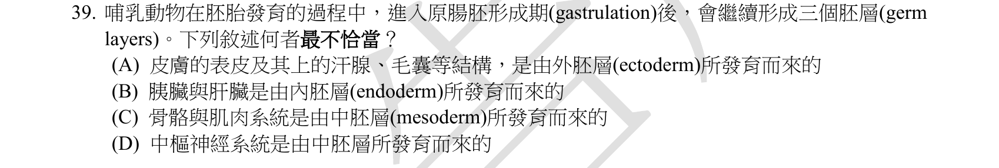
本地原卷PDF7 · 同年原答案PDF1（封存轉存本） · 已核對同年釋疑PDF7–10（未列本題）
官方採計／來源：D 原答案：D
未列已取得同年公告的10筆生物釋疑；依原表記錄，不宣稱沒有其他公告
主分類：Ch47 Animal Development
47.2 / Gastrulation
目錄行3144；條目起始印刷頁1049；實際目錄 PDF48
次分類：Ch47 Animal Development
47.2 / Organogenesis
目錄行3150；條目起始印刷頁1054；實際目錄 PDF48
主分類理由：47.2 / Gastrulation：胚層衍生構造是原腸化建立三胚層後的命運。
次分類理由：47.2 / Organogenesis：神經板、神經管形成直接檢驗中樞神經系統來源
科學說明：原表D。中樞神經系統來自外胚層神經管，非中胚層。教材表47.9概述骨骼肌骨骼多為中胚層、消化道相關上皮及肝臟實質為內胚層；部分顱顏構造有神經脊來源，不能把整個器官所有細胞都歸到單一胚層。
來源涵蓋範圍：分類依本地Campbell 12e真實最小目錄及正文；官網舊PDF轉首頁，釋疑取同年鏡像並與官方URL索引文字交叉核對。課外來源實讀範圍及限制另列。
教材正文：印刷1049／PDF1098、印刷1050／PDF1099、印刷1051／PDF1100、印刷1052／PDF1101、印刷1054／PDF1103、印刷1055／PDF1104、印刷1056／PDF1105
補充來源：本題未另列課本外來源
另行比較：B整個肝胰及C所有骨骼肌肉的概括
D中樞神經來自中胚層的敘述錯。教材1051列常見三胚層衍生物並有例外提示，保留器官實質與支持組織差別。
結論：證據確認，分類疑義已解決。完整覆核紀錄
Q40 · 40.3 / Balancing Heat Loss and Gain 正式分類
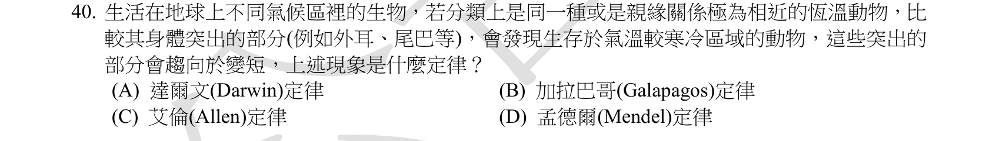
本地原卷PDF7 · 同年原答案PDF1（封存轉存本） · 已核對同年釋疑PDF7–10（未列本題）
官方採計／來源：C 原答案：C
未列已取得同年公告的10筆生物釋疑；依原表記錄，不宣稱沒有其他公告
主分類：Ch40 Basic Principles of Animal Form and Function
40.3 / Balancing Heat Loss and Gain
目錄行2649；條目起始印刷頁885；實際目錄 PDF46
次分類：Ch40 Basic Principles of Animal Form and Function
40.1 / Evolution of Animal Size and Shape
目錄行2617；條目起始印刷頁874；實際目錄 PDF46
主分類理由：40.3 / Balancing Heat Loss and Gain：寒冷地區附肢較短以調節熱交換，主分類為熱量得失平衡。
次分類理由：40.1 / Evolution of Animal Size and Shape：體型及表面積／體積關係是比較的幾何基礎
科學說明：原表C，Allen's rule。較短的耳、尾與四肢有助降低相對散熱面積；與Bergmann主要談整體體型的規則區別。Allen名稱未列為Campbell最小目錄，另以小鼠生長原始研究確認，亦保留發育可塑性，非所有物種毫無例外的定律。
來源涵蓋範圍：分類依本地Campbell 12e真實最小目錄及正文；官網舊PDF轉首頁，釋疑取同年鏡像並與官方URL索引文字交叉核對。課外來源實讀範圍及限制另列。
教材正文：印刷874／PDF923、印刷875／PDF924、印刷885／PDF934、印刷886／PDF935、印刷887／PDF936
補充來源：S08
另行比較：Allen的附肢趨勢是否被改成Bergmann整體體型
原圖限定近緣恆溫動物與較短突出部位，C Allen符合；Darwin／Galapagos／Mendel皆非此描述。主40.3與次40.1均由真實目錄落點。
結論：證據確認，分類疑義已解決。完整覆核紀錄
Q41 · 15.4 / Abnormal Chromosome Number 正式分類
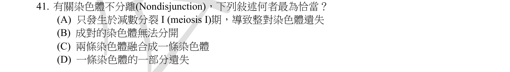
本地原卷PDF7 · 同年原答案PDF1（封存轉存本） · 已核對同年釋疑PDF7–10（未列本題）
官方採計／來源：B 原答案：B
未列已取得同年公告的10筆生物釋疑；依原表記錄，不宣稱沒有其他公告
主分類：Ch15 The Chromosomal Basis of Inheritance
15.4 / Abnormal Chromosome Number
目錄行968；條目起始印刷頁307；實際目錄 PDF39
次分類：Ch15 The Chromosomal Basis of Inheritance
15.4 / Alterations of Chromosome Structure
目錄行971；條目起始印刷頁307；實際目錄 PDF39
主分類理由：15.4 / Abnormal Chromosome Number：不分離造成數目異常，與結構變異分類不同。
次分類理由：15.4 / Alterations of Chromosome Structure：缺失、倒位、轉位等是排除選項所需的結構改變對照
科學說明：原表B。不分離是本應分開的同源染色體或姐妹染色分體未正常分離，可在減數第一次、第二次或有絲分裂發生；不是融合或片段刪除的同義詞。
來源涵蓋範圍：分類依本地Campbell 12e真實最小目錄及正文；官網舊PDF轉首頁，釋疑取同年鏡像並與官方URL索引文字交叉核對。課外來源實讀範圍及限制另列。
教材正文：印刷306／PDF355、印刷307／PDF356、印刷308／PDF357、印刷309／PDF358
補充來源：本題未另列課本外來源
另行比較：只在減數I或整對染色體消失是否是不分離定義
完整A–D及306–309圖文比對，B未正常分離最恰當；染色體數目主分類與結構變化次目分開。
結論：證據確認，分類疑義已解決。完整覆核紀錄
Q42 · 33.3 / Flatworms 正式分類
本地原卷PDF7 · 同年原答案PDF1（封存轉存本） · 已核對同年釋疑PDF7–10（未列本題）
官方採計／來源：D 原答案：D
未列已取得同年公告的10筆生物釋疑；依原表記錄，不宣稱沒有其他公告
主分類：Ch33 An Introduction to Invertebrates
33.3 / Flatworms
目錄行2111；條目起始印刷頁694；實際目錄 PDF44
次分類：Ch41 Animal Nutrition
41.2 / Digestive Compartments
目錄行2701；條目起始印刷頁904；實際目錄 PDF46
主分類理由：33.3 / Flatworms：絛蟲屬扁形動物，消化道喪失直接支持答案。
次分類理由：41.2 / Digestive Compartments：區分無消化道、單開口消化腔與完整消化管
科學說明：原表D。絛蟲由體表吸收宿主營養而無消化道；渦蟲有不完整消化腔，蚯蚓與蝸牛有消化管。不能把所有扁形動物都說成無消化道。
來源涵蓋範圍：分類依本地Campbell 12e真實最小目錄及正文；官網舊PDF轉首頁，釋疑取同年鏡像並與官方URL索引文字交叉核對。課外來源實讀範圍及限制另列。
教材正文：印刷694／PDF743、印刷695／PDF744、印刷696／PDF745、印刷697／PDF746、印刷904／PDF953、印刷905／PDF954
補充來源：本題未另列課本外來源
另行比較：沒有完整消化道與沒有任何消化道是否等義
題幹明寫任何類型；渦蟲有消化腔不可選A。697絛蟲無消化系統與體表吸收支持D，33.3及41.2皆確定。
結論：證據確認，分類疑義已解決。完整覆核紀錄
Q43 · 47.1 / Fertilization 正式分類
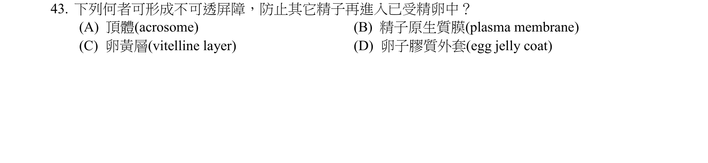
本地原卷PDF7 · 同年原答案PDF1（封存轉存本） · 同年釋疑轉存PDF9
官方採計／來源：C 原答案：C
維持原答案C
主分類：Ch47 Animal Development
47.1 / Fertilization
目錄行3134；條目起始印刷頁1044；實際目錄 PDF48
主分類理由：47.1 / Fertilization：皮質反應改變卵表面形成防止多精入卵的屏障，屬受精。
次分類理由：無另列最小次目；本題考點已由主目錄條目完整涵蓋。
科學說明：原表及釋疑C。以海膽式vitelline layer為背景，皮質顆粒釋放後使卵黃膜改造成受精膜，形成慢速阻擋；不是未改變的卵黃膜在受精前已阻斷全部精子。哺乳類為透明帶改變，教材說未知有同樣快速電位阻擋，不跨物種混用。
來源涵蓋範圍：分類依本地Campbell 12e真實最小目錄及正文；官網舊PDF轉首頁，釋疑取同年鏡像並與官方URL索引文字交叉核對。課外來源實讀範圍及限制另列。
教材正文：印刷1044／PDF1093、印刷1045／PDF1094、印刷1046／PDF1095
補充來源：本題未另列課本外來源
另行比較：題中vitelline layer為卵黃層且B是精子膜
重看四選項與同年釋疑；C可在皮質反應後形成屏障，不把B精子膜誤讀成卵膜。教材1044–1046對物種及快慢阻擋區分已保留。
結論：證據確認，分類疑義已解決。完整覆核紀錄
Q44 · 14.4 / Genetic Testing and Counseling 正式分類
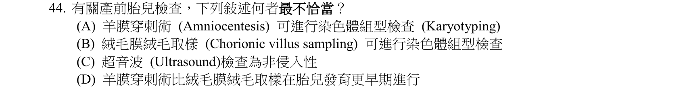
本地原卷PDF8 · 同年原答案PDF1（封存轉存本） · 已核對同年釋疑PDF7–10（未列本題）
官方採計／來源：D 原答案：D
未列已取得同年公告的10筆生物釋疑；依原表記錄，不宣稱沒有其他公告
主分類：Ch14 Mendel and the Gene Idea
14.4 / Genetic Testing and Counseling
目錄行920；條目起始印刷頁287；實際目錄 PDF38
主分類理由：14.4 / Genetic Testing and Counseling：比較羊膜穿刺與絨毛膜取樣的時程、材料及遺傳檢驗能力。
次分類理由：無另列最小次目；本題考點已由主目錄條目完整涵蓋。
科學說明：原表D。教材羊膜穿刺可從第15／16週開始，CVS可於第10／11週進行；所以前者比後者更早的敘述錯誤。此為原題及教材比較範圍，不把教科書週數當作個人檢查建議。
來源涵蓋範圍：分類依本地Campbell 12e真實最小目錄及正文；官網舊PDF轉首頁，釋疑取同年鏡像並與官方URL索引文字交叉核對。課外來源實讀範圍及限制另列。
教材正文：印刷287／PDF336、印刷288／PDF337、印刷289／PDF338
補充來源：本題未另列課本外來源
另行比較：羊膜穿刺和CVS的先後倒置
原圖A/B都是核型、C超音波非侵入、D先後錯；教材288／289直接支持CVS較早，分類14.4確定。
結論：證據確認，分類疑義已解決。完整覆核紀錄
Q45 · 5.4 / Polypeptides (Amino Acid Polymers) 正式分類
本地原卷PDF8 · 同年原答案PDF1（封存轉存本） · 已核對同年釋疑PDF7–10（未列本題）
官方採計／來源：C 原答案：C
未列已取得同年公告的10筆生物釋疑；依原表記錄，不宣稱沒有其他公告
主分類：Ch05 The Structure and Function of Large Biological Molecules
5.4 / Polypeptides (Amino Acid Polymers)
目錄行265；條目起始印刷頁78；實際目錄 PDF36
次分類：Ch05 The Structure and Function of Large Biological Molecules
5.4 / Amino Acids (Monomers)
目錄行262；條目起始印刷頁75；實際目錄 PDF36
主分類理由：5.4 / Polypeptides (Amino Acid Polymers)：肽鍵形成是胺基酸聚合成多肽的直接過程。
次分類理由：5.4 / Amino Acids (Monomers)：胺基與羧基的位置說明成鍵原子的來源
科學說明：原表C。相鄰胺基酸的羧基碳與胺基氮形成C–N肽鍵；不是其他選項的C–O、C–H或N–S。縮合淨失去水，多肽主鏈保留羰基。
來源涵蓋範圍：分類依本地Campbell 12e真實最小目錄及正文；官網舊PDF轉首頁，釋疑取同年鏡像並與官方URL索引文字交叉核對。課外來源實讀範圍及限制另列。
教材正文：印刷75／PDF124、印刷76／PDF125、印刷77／PDF126、印刷78／PDF127
補充來源：本題未另列課本外來源
另行比較：將其他成鍵選項記錯成C–C或氫鍵
原圖A C–O、B C–H、C C–N、D N–S；修正首稿錯列的排除內容，78圖15羧基碳與胺基氮成肽鍵。
結論：證據確認，分類疑義已解決。完整覆核紀錄
Q46 · 48.4 / Termination of Neurotransmitter Signaling 正式分類
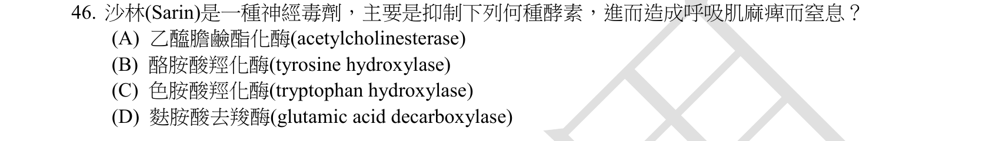
本地原卷PDF8 · 同年原答案PDF1（封存轉存本） · 已核對同年釋疑PDF7–10（未列本題）
官方採計／來源：A 原答案：A
未列已取得同年公告的10筆生物釋疑；依原表記錄，不宣稱沒有其他公告
主分類：Ch48 Neurons, Synapses, and Signaling
48.4 / Termination of Neurotransmitter Signaling
目錄行3225；條目起始印刷頁1079；實際目錄 PDF48
次分類：Ch48 Neurons, Synapses, and Signaling
48.4 / Neurotransmitters
目錄行3231；條目起始印刷頁1080；實際目錄 PDF48
主分類理由：48.4 / Termination of Neurotransmitter Signaling：Sarin延長傳遞訊號的原因是妨礙突觸間隙ACh清除。
次分類理由：48.4 / Neurotransmitters：ACh及其酯酶提供具名作用物與受器背景
科學說明：原表A。Sarin抑制acetylcholinesterase，使ACh無法正常水解而累積。原圖中文「乙醯膽鹼酯化酶」與英文酵素名稱不完全一致，通常譯作乙醯膽鹼酯酶；保留原文字，不把作用混為合成ACh或阻止釋放。
來源涵蓋範圍：分類依本地Campbell 12e真實最小目錄及正文；官網舊PDF轉首頁，釋疑取同年鏡像並與官方URL索引文字交叉核對。課外來源實讀範圍及限制另列。
教材正文：印刷1079／PDF1128、印刷1080／PDF1129、印刷1081／PDF1130
補充來源：本題未另列課本外來源
另行比較：中文酯化酶是否可忽略英文acetylcholinesterase
原圖中文確有「酯化酶」，英文為AChE；同題其他酵素均非ACh清除機制。主終止訊號與次傳遞物兩同章條目照存。
結論：證據確認，分類疑義已解決。完整覆核紀錄
Q47 · 3.3 / Buffers 正式分類
本地原卷PDF8 · 同年原答案PDF1（封存轉存本） · 已核對同年釋疑PDF7–10（未列本題）
官方採計／來源：A 原答案：A
未列已取得同年公告的10筆生物釋疑；依原表記錄，不宣稱沒有其他公告
主分類：Ch03 Water and Life
3.3 / Buffers
目錄行181；條目起始印刷頁52；實際目錄 PDF35
次分類：Ch42 Circulation and Gas Exchange
42.7 / Respiratory Pigments
目錄行2853；條目起始印刷頁947；實際目錄 PDF46
主分類理由：3.3 / Buffers：弱酸與共軛鹼共同緩衝血液pH是Buffers條目的直接例子。
次分類理由：42.7 / Respiratory Pigments：CO2運輸連結碳酸／碳酸氫根平衡與血液功能
科學說明：原表A。H2CO3／HCO3−可吸收或提供H+，緩和pH變動；其他酸鹼對不等於血液的主要緩衝；D原圖HPO²−缺少O的下標4，標準磷酸氫根為HPO4²−。血液另有血紅素等緩衝系統，不能說碳酸對是唯一緩衝。
來源涵蓋範圍：分類依本地Campbell 12e真實最小目錄及正文；官網舊PDF轉首頁，釋疑取同年鏡像並與官方URL索引文字交叉核對。課外來源實讀範圍及限制另列。
教材正文：印刷51／PDF100、印刷52／PDF101、印刷53／PDF102、印刷947／PDF996、印刷948／PDF997、印刷949／PDF998
補充來源：本題未另列課本外來源
另行比較：四組都可談酸鹼，為何選血液主要緩衝A
重開原圖，A碳酸／碳酸氫根與53直接吻合。D印刷的HPO缺下標4，標準磷酸氫根為HPO4²−；其他酸鹼對不等於血液主要緩衝。
結論：證據確認，分類疑義已解決。完整覆核紀錄
Q48 · 46.4 / Hormonal Control of Female Reproductive Cycles 正式分類
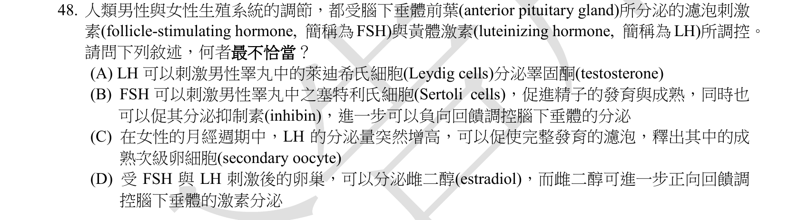
本地原卷PDF8 · 同年原答案PDF1（封存轉存本） · 同年釋疑轉存PDF10
官方採計／來源：D 原答案：D
維持原答案D
主分類：Ch46 Animal Reproduction
46.4 / Hormonal Control of Female Reproductive Cycles
目錄行3104；條目起始印刷頁1032；實際目錄 PDF48
次分類：Ch46 Animal Reproduction
46.4 / Hormonal Control of the Male Reproductive System
目錄行3101；條目起始印刷頁1031；實際目錄 PDF48
次分類：Ch45 Hormones and the Endocrine System
45.2 / Feedback Regulation
目錄行3020；條目起始印刷頁1005；實際目錄 PDF47
主分類理由：46.4 / Hormonal Control of Female Reproductive Cycles：雌二醇隨濃度及週期改變回饋方向，是女性生殖週期核心。
次分類理由：46.4 / Hormonal Control of the Male Reproductive System：男性LH與FSH的作用細胞用於核其他選項；45.2 / Feedback Regulation：比較正回饋與負回饋的控制原理
科學說明：原表及釋疑D，但保留科學衝突：教材印刷1032圖及1033正文明示低雌二醇抑制、高且上升的雌二醇可促進GnRH與促性腺激素並誘發LH高峰。題目D用「可」正回饋不能一概判為生理錯誤；公告否定其正回饋的理由與教材不符。已取得原表與公告字母一致，仍記D，未自行推定另一個最終官方採計。
來源涵蓋範圍：分類依本地Campbell 12e真實最小目錄及正文；官網舊PDF轉首頁，釋疑取同年鏡像並與官方URL索引文字交叉核對。課外來源實讀範圍及限制另列。
教材正文：印刷1005／PDF1054、印刷1031／PDF1080、印刷1032／PDF1081、印刷1033／PDF1082、印刷1034／PDF1083
補充來源：本題未另列課本外來源
另行比較：D的「可正向回饋」是否與濃度及週期依賴相容
原圖D的「可」及公告維持D均核實；實看教材1032綠色正回饋箭頭、1033高雌二醇促GnRH／LH，公告理由不符。保留科學衝突及官方D，不宣稱新採計。
結論：證據確認，分類疑義已解決。完整覆核紀錄
Q49 · 24.1 / Other Definitions of Species 正式分類
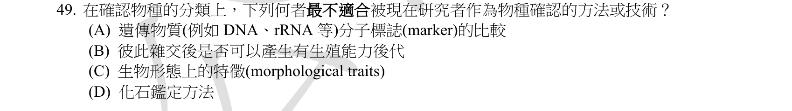
本地原卷PDF8 · 同年原答案PDF1（封存轉存本） · 已核對同年釋疑PDF7–10（未列本題）
官方採計／來源：D 原答案：D
未列已取得同年公告的10筆生物釋疑；依原表記錄，不宣稱沒有其他公告
主分類：Ch24 The Origin of Species
24.1 / Other Definitions of Species
目錄行1491；條目起始印刷頁510；實際目錄 PDF41
次分類：Ch24 The Origin of Species
24.1 / The Biological Species Concept
目錄行1488；條目起始印刷頁507；實際目錄 PDF41
次分類：Ch26 Phylogeny and the Tree of Life
26.2 / Morphological and Molecular Homologies
目錄行1646；條目起始印刷頁558；實際目錄 PDF42
主分類理由：24.1 / Other Definitions of Species：物種界定需要比較不同物種概念的適用範圍。
次分類理由：24.1 / The Biological Species Concept：生殖隔離是生物學物種概念的判準；26.2 / Morphological and Molecular Homologies：形態與分子資料提供辨識證據
科學說明：原表D為題問「最不適當」。若要綜合辨識可取樣的現生群體，分子、交配或形態資料通常較直接；但題幹未明訂只限現生物種，化石仍可依形態辨識古生物種。保留題目適用範圍不充分之處，不能宣稱研究者不能用化石鑑定物種。
來源涵蓋範圍：分類依本地Campbell 12e真實最小目錄及正文；官網舊PDF轉首頁，釋疑取同年鏡像並與官方URL索引文字交叉核對。課外來源實讀範圍及限制另列。
教材正文：印刷507／PDF556、印刷508／PDF557、印刷509／PDF558、印刷510／PDF559、印刷558／PDF607、印刷559／PDF608
補充來源：本題未另列課本外來源
另行比較：「現在研究者」是否等同只研究現生物種
原圖未限定現生物種；D化石仍可搭配形態物種概念，官方最不適合的取捨有語境限制。主其他物種定義、次生物學概念及形態分子辨識成立。
結論：證據確認，分類疑義已解決。完整覆核紀錄
Q50 · 50.3 / Evolution of Visual Perception 正式分類
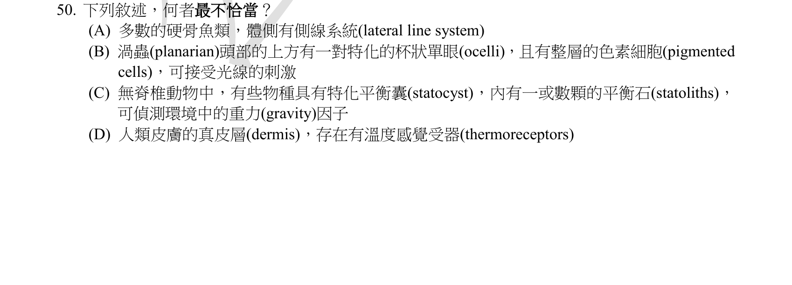
本地原卷PDF8 · 同年原答案PDF1（封存轉存本） · 同年釋疑轉存PDF10
官方採計／來源：B 原答案：B
維持原答案B
主分類：Ch50 Sensory and Motor Mechanisms
50.3 / Evolution of Visual Perception
目錄行3361；條目起始印刷頁1117；實際目錄 PDF49
次分類：Ch50 Sensory and Motor Mechanisms
50.2 / Sensing of Gravity and Sound in Invertebrates
目錄行3348；條目起始印刷頁1112；實際目錄 PDF49
次分類：Ch50 Sensory and Motor Mechanisms
50.2 / Hearing and Equilibrium in Other Vertebrates
目錄行3354；條目起始印刷頁1116；實際目錄 PDF49
次分類：Ch50 Sensory and Motor Mechanisms
50.1 / Types of Sensory Receptors
目錄行3341；條目起始印刷頁1110；實際目錄 PDF49
主分類理由：50.3 / Evolution of Visual Perception：渦蟲眼點光受器與遮光色素的分工是錯誤選項的核心。
次分類理由：50.2 / Sensing of Gravity and Sound in Invertebrates：平衡囊與平衡石感重力；50.2 / Hearing and Equilibrium in Other Vertebrates：側線系統感水流；50.1 / Types of Sensory Receptors：冷熱等不同感覺受器類型
科學說明：原表及釋疑B。渦蟲眼點的光受器負責感光，色素細胞遮蔽背向來光以辨方向；B「可接受光線」若回指色素細胞則不準確，若回指杯狀單眼則可以成立，主詞有歧義。公告說沒有整層色素細胞，與教材圖50.15所示的遮光色素細胞排列不符，無法據此證明B整句為假，不能抹除原圖結構或改說渦蟲眼點沒有色素細胞。
來源涵蓋範圍：分類依本地Campbell 12e真實最小目錄及正文；官網舊PDF轉首頁，釋疑取同年鏡像並與官方URL索引文字交叉核對。課外來源實讀範圍及限制另列。
教材正文：印刷1110／PDF1159、印刷1111／PDF1160、印刷1112／PDF1161、印刷1116／PDF1165、印刷1117／PDF1166、印刷1118／PDF1167
補充來源：本題未另列課本外來源
另行比較：色素細胞層不存在，或其與光受器功能混用
重開原圖B，「可接受光線」可回指眼點或色素細胞，語法有歧義。教材1117圖顯示遮光色素細胞及光受器，公告稱無整層色素細胞的理由不充分。官方B照存，補記若主詞為眼點則可感光、不能以圖層不存在作結。
結論：證據確認，分類疑義已解決。完整覆核紀錄
目前篩選沒有符合的題目；本年度總數仍為50題。
補充來源
查證日期：2026-09-10。使用原始研究摘要、官方資料與作者教材，不宣稱所有出版商全文已取得。詳細界線見來源紀錄。
- S01 Bilayer-Forming Lipids Enhance Archaeal Monolayer Membrane Stability（原始研究，2025）
天然古菌脂質的中子繞射實驗顯示四醚可形成跨膜單層，混合二醚與四醚仍會改變穩定性；支持Q4的某些嗜熱古菌構造，同時限制單一脂質必然決定耐熱的推論。
實讀範圍：實讀研究摘要、引言四醚結構及脂質實驗結果的網頁索引回讀
原始來源1
限制：不是逐字讀完全文；PMC／PubMed直接開啟曾回驗證頁，保留失敗。科學補充為2025研究，不冒充106年官方命題依據。 - S02 MedlinePlus Genetics：Tay–Sachs disease
HEXA酵素缺陷造成GM2在溶體累積，尤其傷害中樞神經細胞；不同於肝臟膽固醇累積，支持Q13排除B。
實讀範圍：Description、Causes、Inheritance段落
原始來源1
限制：政府官方衛教來源，只用於疾病機制；未作臨床診療或2017年命題依據。 - S03 MedlinePlus Genetics：Pompe disease
GAA編碼酸性α葡萄糖苷酶，缺陷引起溶體肝醣累積，肌肉等多器官受影響。
實讀範圍：Causes、Inheritance與Description機制；另行補存頁面聚焦回讀
原始來源1
限制：僅查機制與遺傳型態，非個人診療建議；網頁回讀雜湊與原網站位元雜湊分別標示。 - S04 Du等：Predicting Sweetness Intensity and Uncovering Quantitative Interactions of Mixed Sweeteners（Foods 2026）
實驗用不同濃度蔗糖作甜度參照，支持Q23的C；甜度為感官量測而非分子式自動決定的常數。
實讀範圍：原始研究方法2.2–2.4及參照濃度段落的索引回讀
原始來源1
限制：未直接查閱ISO標準全文；MDPI open曾Internal Error，改以工具搜尋取得方法內容；2026補證，不冒充106年原始來源。 - S05 Nobel官方McClintock史料及Fire／Mello RNAi說明
McClintock研究玉米遺傳與染色體位置變動；本人講稿追溯染色體破裂活化可轉位元件。Fire／Mello以雙股RNA誘發序列專一靜默，支持Q7與Q9。
實讀範圍：McClintock Work段及本人Nobel Lecture結語，2006 Advanced Information與Press Release的RNAi機制段
原始來源1 · 原始來源2 · 原始來源3
限制：未宣稱讀完整講稿或重做實驗；不把提到病毒壓力的討論當作最初發現方法。 - S06 Jensen等1984：Cyanide inhibition of cytochrome c oxidase（原始研究）
快速凍結電子順磁共振實驗直接研究氰化物對COX的結合與抑制；配合Campbell的電子流及DNP印刷186頁解偶聯題，區別Q14兩者作用點。
實讀範圍：PubMed收錄的原始研究摘要
原始來源1
限制：未閱讀全文方法或執行實驗，只作抑制COX的定性機制佐證。 - S07 DailyMed原藥品標示：Ampicillin／Chloramphenicol
Ampicillin的藥品標示機制為抑制細胞壁生合成；chloramphenicol標示抑制蛋白合成，搭配教材349的tetracycline核糖體作用，核實Q22。
實讀範圍：Ampicillin Microbiology／Mechanism of Action、Chloromycetin Clinical Pharmacology段落
原始來源1 · 原始來源2
限制：只讀作用機制，不使用劑量或臨床處方資訊；此為原廠標示由NLM提供的原始資料。 - S08 Serrat等2008：Temperature regulates limb length in homeotherms by directly modulating cartilage growth
不同飼養溫度的小鼠與無血管的體外軟骨實驗顯示溫度影響附肢生長；確認Allen規則語境，也顯示發育可塑性不能只歸為基因選擇。
實讀範圍：原始研究摘要及圖1–4文字圖說；未視讀圖像
原始來源1
限制：不將配置相關性推成所有物種必然定律；未讀全部實驗細節。 - S09 OpenStax Anatomy and Physiology 6.3：Bone Structure
原出版教材說明骨膜供肌腱韌帶附著、膠原與礦物組成，以及破骨細胞吸收骨、源自單核球系；Q30的A若涵蓋全部骨細胞也須限制。
實讀範圍：Gross Anatomy of Bone、Bone Cells and Tissue、骨細胞表格的文字內容
原始來源1
限制：官方教材補充而非實驗原論文；未作完整書冊或專家外審。Campbell最小分類仍以本地12e為準。